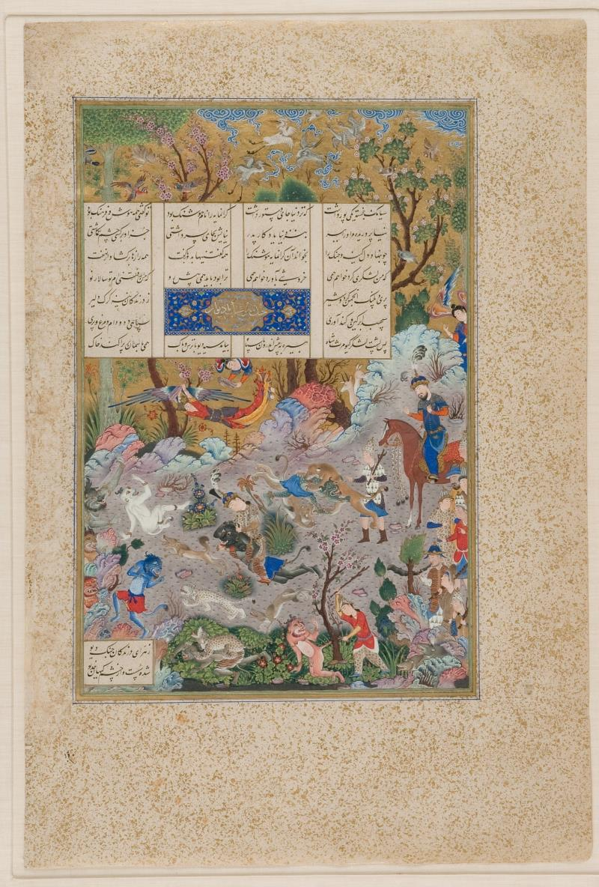
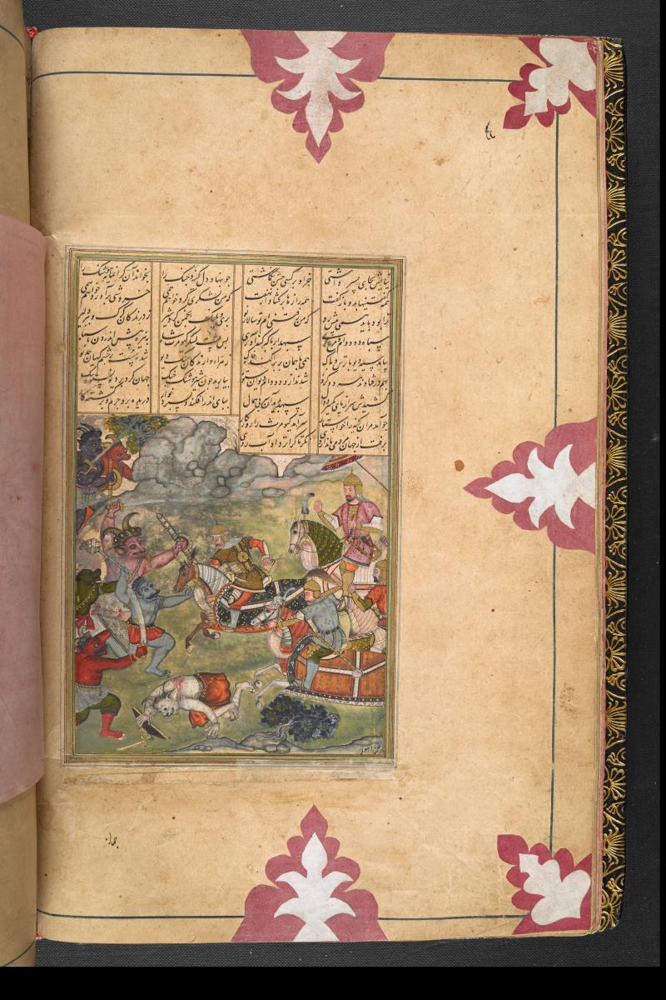
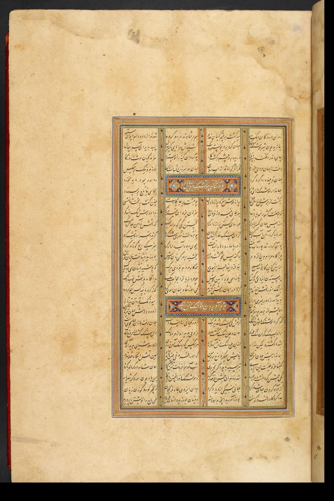
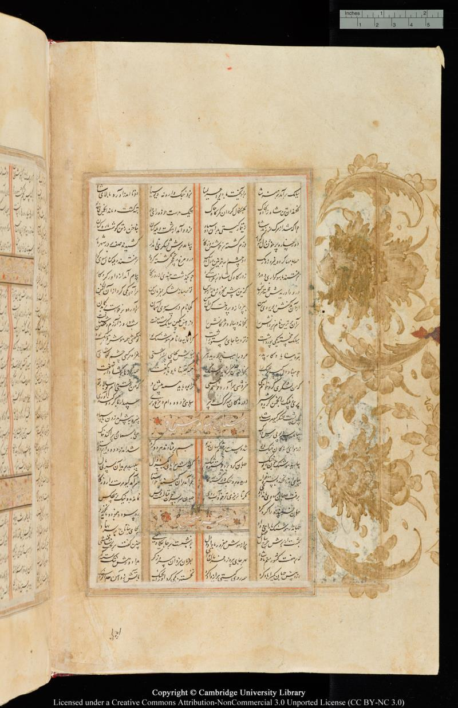
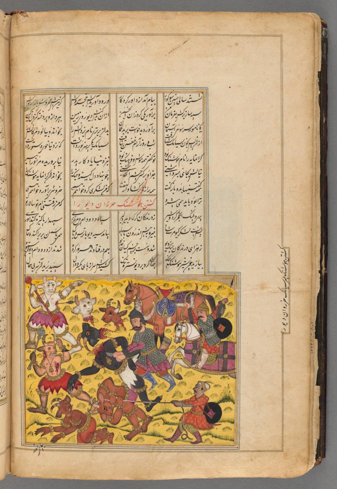
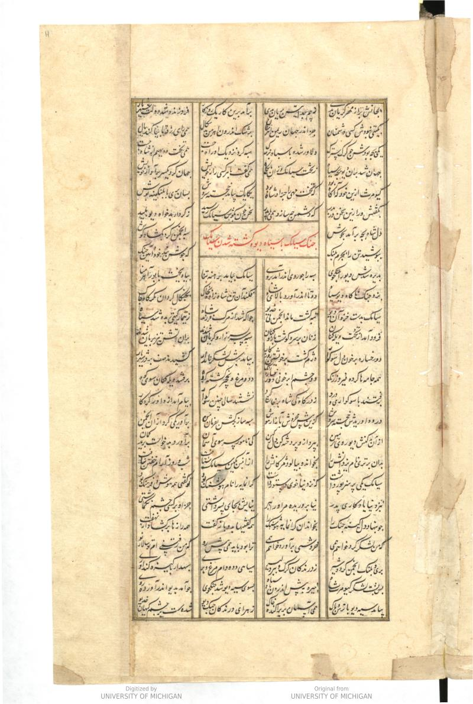
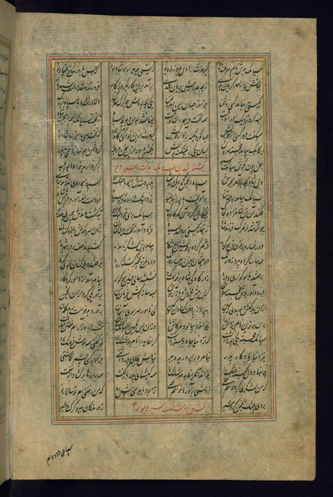
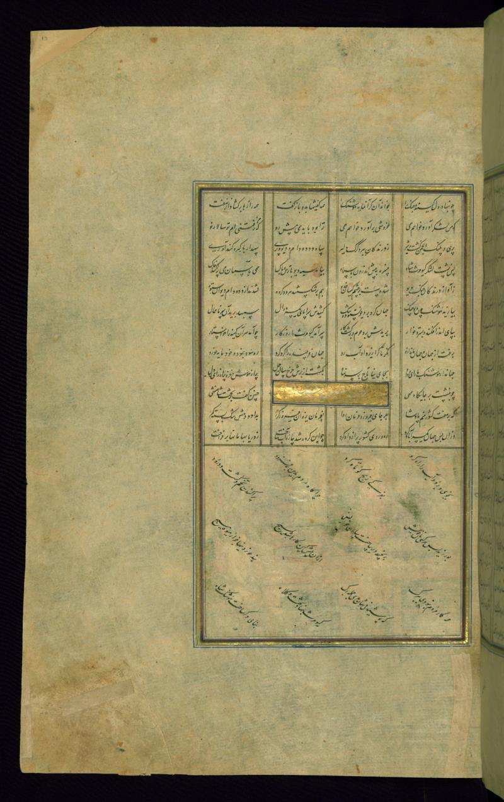
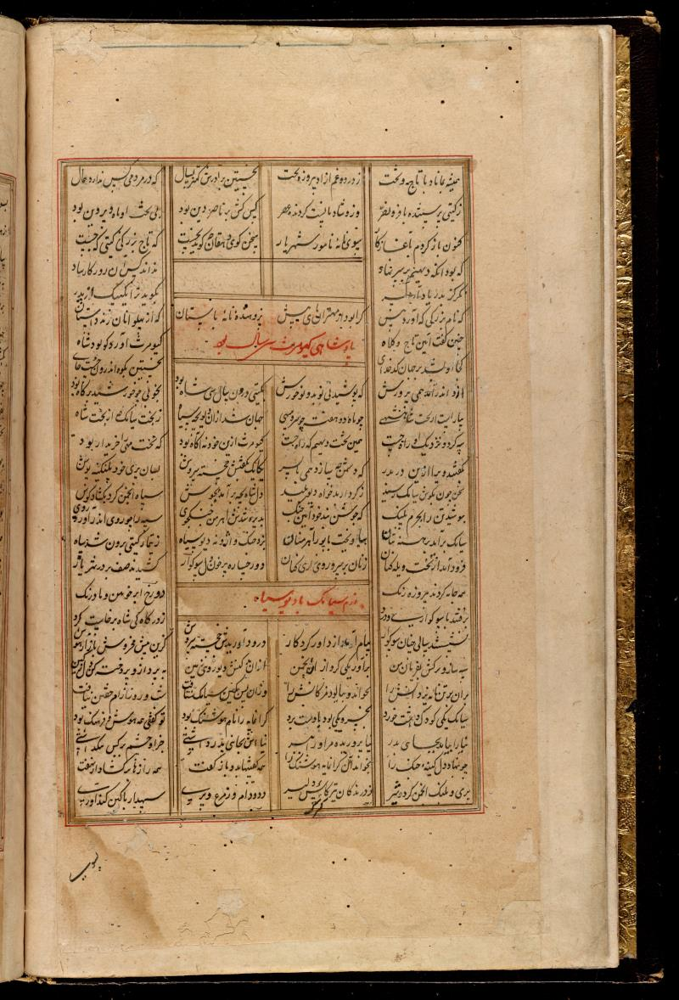

Shahnameh · Pizzi Reading 1 · Cross-edition collation
Hushang in six editions
هوشنگ در شش چاپ شاهنامه
Pizzi’s first reading — خجسته سیامک یکی پور داشت to نه نیز آشکارا نمایدت چهر — against the five editions it derives from, the vocalised Tajik transliteration, and three nineteenth-century translations. The editions do not contain the same poem: they disagree on which couplets exist, in what order, and in what words. Each row is one couplet; where an edition lacks it the cell is left hatched and empty, so absence reads as loudly as text.
Differences are computed on a letter stream with spacing, ZWNJ, harakat, ezafe, letterforms and the classic contractions folded away, so neither the joined orthography of the older printings (وجنگرا, بنزد) nor ترا for تو را is mistaken for a variant reading. Translations run alongside in bands — sentence by sentence, anchored to the couplets they render.
Two layouts of the same collation: translations as bands (this page) · translations as columns
| #couplet | PizziPiManuale della lingua persiana, 1883pp. 58–63 | VullersVuLiber regum, Leiden 1877–84vol. 1, pp. 16–20 | MohlMoLe Livre des Rois, Persian textvol. 1, pp. 17–21 | MacanMaCalcutta, 1829vol. 1, pp. 13–16 | KhaleghiKhKhaleghi-Motlaghvol. 1, pp. 24–25, 29–31 | MoscowMsMoscow ed., via Ganjoorvol. 1, pp. 31–35 | TransliterationTjTajik edition, Latinvocalised |
|---|---|---|---|---|---|---|---|
رفتن هوشنگ و کیومرث به جنگ دیو سیاه Hushang and Kayumars go to war on the Black Div Whole section in translationPizziItalian, 1883 Siyâmek fortunato aveva un figlio che presso l’avo suo (Gayûmers, padre di Siyâmek, primo re e primo uomo, v. il Vocab.) teneva il postò di consigliere. Di questo valoroso il nome era Hôsheng; tu diresti che egli era la Prudenza e l'Avvedutezza in persona. Presso all’ avo suo egli era come un ricordo del padre suo (Siyâmek, il padre di Hôsheng, era stato ucciso dal Dêvo Nero), e quest avo l'aveva allevato nel suo grembo. L’avo (ash dipende da dâshtî) lo teneva in luogo del figlio, e, fuor di lui, non poneva su nessun altro gli occhi (sing.). Allorquando egli pose il cuore (pensò, ebbe intenzione) alla vendetta ed alla guerra (per vendicar la morte di Siyâmek), chiamò a sè quel valoroso Hôsheng, tutte le cose che dovevano avvenire, a lui raccontò, tutti i secreti gli aprì dall’ intimo dell’ animo, dicendo: Io voglio fare (radunare) un esercito, voglio levare un grido di guerra. A te intanto esser conviene il capitano, poichè io sono per andare (cioè son vicino a morire, sono vecchio e non posso sostener la fatica di guidare un esercito) e tu sei novello (giovane) capitano. Così egli (Gayûmers) radunò Perî (v. il Vocab.) pantere e leoni, tra gli animali sbrananti radunò lupi e tigri coraggiose (Gayûmers qui raccoglie nel suo eser- cito anche le fiere, e ciò in forza del concetto che il male rappresentato dai Dêvi si fa sentire a tutte le crea- ture, e però tutte, comprese le fiere, devono combatterlo1 secondo le loro forze). Era un esercito di animali e di uccelli e di Perî, e il capitano precedeva con lorica e valore. Dietro al tergo dell'esercito stava re Gayûmers, e il nipote so (Hôsheng) andava innanzi con l'esercito. Venne allora il Dêvo Nero frero di terrore e sgomento, e intanto fino al cielo egli spargeva (sollevava) la polvere; per gli urli delle fiere laceranti (armate d’artigli) le branche (al sing.) del Dêvo restarono rintuzzate agli occhi del re del mondo (Gayûmers). Ambedue le schiere caddero insieme (si scontrarono), e i Dêvi furono oppressi (sgomi- nati) dalle fiere (dell esercito di Gayûmers). Hêsheng allora, come leone, allungò la mano, e fece angusto il mondo (frase iperbolica per dire: ridurre all’ estremo qualcuno) al maligno Dêvo; gli trasse da capo a piedi tutto insieme un vincolo di cuoio (lo legò da capo a piedi); il capitano (Hôsheng) gli troncò quella testa senza pari (orribile più di ogni altra); lo gettò ai suor piedi e lo calpestò ignominiosamente, dopo avergli (lett. sopra di lui) lacerata la pelle, dopochè ogni cosa fu ridotta al- l'estremo fer lus. Quando Gayiêmers riuscì quale esattore di quella vendetta, giunse per Gayûmers la vita alla fine. Egli se ne andò (morì), e il regno del mondo rimase di lui come eredità; e tu osserva a chi mai dopo di lui toccherà un stile onore. Egli occupò (dominò) il mondo inganna- 1 Questa idea è stata più ampiamente svolta nel mio Discorso sull Epopea persiana premesso ai miei Racconti Epici di Firdusi, c. II, 9. tore; percorse la via dell’ utilità in pro degli uomini, ma egli non godè alcun frutto. Il mondo da capo a fondo è come una illusione e anche di più; in esso non dura il male e il bene per nessuno. WarnerEnglish, 1905 The blesséd Siyamak had left a son, His grandsire's minister, a prince by name Hushang —a name implying sense and wisdom. It was the lost restored and fondly cherished, And therefore being set on war the Shah Sent for the prince and frankly told him all :— I mean to gather troops and raise the war-cry, But thou being young shalt lead for I am spent. He raised a host of fairies, lions, pards, And raveners, as wolves and fearless tigers, But took the rear, his grandson led the host. The Black Div though in terror raised the dust To heaven, but his claws were hanging slack Frayed by the roaring beasts. Hushang saw this And putting forth his hands like lion's paws . Made earth too narrow for the lusty div, Then flayed him, lopping otf his monstrous head, And trampled him in scorn thus flayed and shent. The days of Gaiumart had reached their close When he achieved this vengeance on his foes ; He passed away, the world was for his heir, But see who hath had glory to compare With his! He owned this tricky world and made The path of gain his path, and yet he stayed Not to enjoy, for like a story done Is this world: good and ill abide with none. MohlFrench, 1876 Siamek le glorieux avait un fils qui servait de Destour à son grand-père. Son nom était Houscheng, il était toute intelligence et toute prudence. Il avait grandi dans le sein de son grand-père, pour qui il était un souvenir de Siamek. Le grand-père l'avait adopté au lieu de son fils, et ses yeux ne reposaient que sur lui. Lorsqu'il fut décidé à la vengeance et au combat, il appela le noble Houscheng et lui annonça tout ce qui devait avenir, et lui révéla tout ce qui était secret. Je vais rassembler une armée, je pousserai un cri de guerre; c’est à toi à marcher le premier, car je suis un homme mourant et tu es un jeune héros. Il rassembla les Péris, et parmi les animaux féroces, les tigres, les lions, les loups et les léopards; c'était une armée de bêtes fauves, d'oiseaux et de Péris, sous un chef plein de fierté et de bravoure. Kaïoumors suivait derrière l’armée, et son petit-fils marchait devant lui au milieu des combattants. Le Div noir s’avança tremblant et en crainte, et fit voler la poussière vers le ciel; le roi s’aperçut que les hurlements des animaux avaient émoussé les grifles du Div. Les deux armées se rencontrèrent, les Divs tremblèrent devant les bêtes féroces, Houscheng étendit ses mains comme un lion, et rendit la terre étroite au vaillant Div. Il lui arracha la peau de la tête aux pieds et coupa sa tête monstrueuse; il le jeta sous ses pieds, et le foula comme une chose vile, dont la peau était en lambeaux, dont la vie était partie. Kaïoumors ayant ainsi achevé la vengeance qu’il avait désirée, sa vie s’en alla, il mourut, et le monde resta vide de lui. Regarde! qui pourrait atteindre une gloire égale à la sienne? Il avait amassé Les biens de ce monde trompeur; il avait montré aux hommes le chemin des richesses, mais il n’en avait pas joui. Le monde n’est qu'un rêve qui passe, et ni le bonheur ni le malheur ne durent. | |||||||
PizziItalian, 1883 Siyâmek fortunato aveva un figlio che presso l’avo suo (Gayûmers, padre di Siyâmek, primo re e primo uomo, v. il Vocab.) teneva il postò di consigliere. WarnerEnglish, 1905 The blesséd Siyamak had left a son, His grandsire's minister, a prince by name Hushang —a name implying sense and wisdom. MohlFrench, 1876 Siamek le glorieux avait un fils qui servait de Destour à son grand-père. Son nom était Houscheng, il était toute intelligence et toute prudence. | |||||||
| 1 | خجسته سیامک یکی پور داشتکه نزد نیا جای دستور داشتخجسته سیامک یکی پور داشتکه نزد نیا جای دستور داشت | سیامک خجسته یکی پور داشتکه نزد نیا جای دستور داشتسیامک خجسته یکی پور داشتکه نزد نیا جای دستور داشت | سیامک خجسته یکی پور داشتکه نزد نیا جای دستور داشتسیامک خجسته یکی پور داشتکه نزد نیا جای دستور داشت | سیامک خجسته یکی پور داشتکه نزد نیا جای دستور داشتسیامک خجسته یکی پور داشتکه نزد نیا جای دستور داشت | سیامک خجسته یکی پور داشتکه نزد نیا جای دستور داشتسیامک خجسته یکی پور داشتکه نزد نیا جای دستور داشت | خجسته سیامک یکی پور داشتکه نزد نیا جاه دستور داشتخجسته سیامک یکی پور داشتکه نزد نیا جاه دستور داشت | siýāmаk xujаstа ýake pur dāštki nаzdi niýā jāi dаstur dāšt |
SyntaxUniversal Dependencies reading01-pizzi-c111 words
| |||||||
PizziItalian, 1883 Di questo valoroso il nome era Hôsheng; tu diresti che egli era la Prudenza e l'Avvedutezza in persona. Presso all’ avo suo egli era come un ricordo del padre suo (Siyâmek, il padre di Hôsheng, era stato ucciso dal Dêvo Nero), e quest avo l'aveva allevato nel suo grembo. WarnerEnglish, 1905 MohlFrench, 1876 Il avait grandi dans le sein de son grand-père, pour qui il était un souvenir de Siamek. Le grand-père l'avait adopté au lieu de son fils, et ses yeux ne reposaient que sur lui. | |||||||
| 2 | گرانمایه را نام هوشنگ بودتو گفتی همه هوش و فرهنگ بودگرانمایه را نام هوشنگ بودتو گفتی همه هوش و فرهنگ بود | گرانمایهرا نام هوشنگ بودتو گفتی همه هوش وفرهنگ بودگرانمایه را نام هوشنگ بودتو گفتی همه هوش و فرهنگ بود | گرانمایه را نام هوشنگ بودتوگفتی همه هوش وفرهنگ بودگرانمایه را نام هوشنگ بودتو گفتی همه هوش و فرهنگ بود | گران مایه را نام هوشنگ بودتوگفتی همه هوش وفرهنگ بودگرانمایه را نام هوشنگ بودتو گفتی همه هوش و فرهنگ بود | گرانمایه را نام هوشنگ بودتو گفتی همه هوش و فرهنگ بودگرانمایه را نام هوشنگ بودتو گفتی همه هوش و فرهنگ بود | گرانمایه را نام هوشنگ بودتو گفتی همه هوش و فرهنگ بودگرانمایه را نام هوشنگ بودتو گفتی همه هوش و فرهنگ بود | gаrānmāýarā nām hušаng budtu guftī, hаmа hušu fаrhаng bud |
SyntaxUniversal Dependencies reading01-pizzi-c212 words
| |||||||
PizziItalian, 1883 WarnerEnglish, 1905 It was the lost restored and fondly cherished, And therefore being set on war the Shah Sent for the prince and frankly told him all :— I mean to gather troops and raise the war-cry, But thou being young shalt lead for I am spent. MohlFrench, 1876 | |||||||
| 3 | به نزد نیا یادگار پدرنیا پروریده مر او را به بربه نزد نیا یادگار پدرنیا پروریده مر او را به بر | بنزد نیا یادگار پدرنیا پروریده مر اورا ببربه نزد نیا یادگار پدرنیا پروریده مر او را به بر | بنزد نیا یادگار پدرنیا پروریده مر اورا ببربه نزد نیا یادگار پدرنیا پروریده مر او را به بر | به نزد نیا یادگار پدرنیا پروریده مر او را ببربه نزد نیا یادگار پدرنیا پروریده مر او را به بر | بنزدِ نیا یادگارِ پدرنیا پروریده مرو را به بربه نزد نیا یادگار پدرنیا پروریده مر او را به بر | به نزد نیا یادگار پدرنیا پروریده مر او را به بربه نزد نیا یادگار پدرنیا پروریده مر او را به بر | bа nаzdi niýā ýādgāri pаdаrniýā pаrvаridа mаr ūrā bа bаr |
SyntaxUniversal Dependencies reading01-pizzi-c312 words
| |||||||
PizziItalian, 1883 L’avo (ash dipende da dâshtî) lo teneva in luogo del figlio, e, fuor di lui, non poneva su nessun altro gli occhi (sing.). WarnerEnglish, 1905 MohlFrench, 1876 | |||||||
| 4 | نیایش به جای پسر داشتیجز او بر کسی چشم نگماشتینیایش به جای پسر داشتیجز او بر کسی چشم نگماشتی | نیایش بجای پسر داشتیجز او بر کسی چشم نگماشتینیایش به جای پسر داشتیجز او بر کسی چشم نگماشتی | نیایش بجای پسر داشتیجزاو برکسی چشم نگماشتینیایش به جای پسر داشتیجز او بر کسی چشم نگماشتی | نیایش بجای پسر داشتیجزاو بر کسی چشم نگماشتینیایش به جای پسر داشتیجز او بر کسی چشم نگماشتی | نیایش بجای پسر داشتیجزو بر کسی چشم نگماشتینیایش به جای پسر داشتیجز او بر کسی چشم نگماشتی | نیایش به جای پسر داشتیجز او بر کسی چشم نگماشتینیایش به جای پسر داشتیجز او بر کسی چشم نگماشتی | niýāýaš bа jāi pisаr dāštījuz ū bаr kаse čаšm nаgmāštī |
SyntaxUniversal Dependencies reading01-pizzi-c413 words
| |||||||
PizziItalian, 1883 Allorquando egli pose il cuore (pensò, ebbe intenzione) alla vendetta ed alla guerra (per vendicar la morte di Siyâmek), chiamò a sè quel valoroso Hôsheng, tutte le cose che dovevano avvenire, a lui raccontò, tutti i secreti gli aprì dall’ intimo dell’ animo, dicendo: Io voglio fare (radunare) un esercito, voglio levare un grido di guerra. WarnerEnglish, 1905 MohlFrench, 1876 Lorsqu'il fut décidé à la vengeance et au combat, il appela le noble Houscheng et lui annonça tout ce qui devait avenir, et lui révéla tout ce qui était secret. | |||||||
| 5 | چو بنهاد دل کینه و جنگ رابخواند آن گرانمایه هوشنگ راچو بنهاد دل کینه و جنگ رابخواند آن گرانمایه هوشنگ را | چو بنهاد دل کینه وجنگرابخواند آن گرانمایه هوشنگراچو بنهاد دل کینه و جنگ رابخواند آن گرانمایه هوشنگ را | چوبنهاد دل کینه وجنگ رابخواند آن گرانمایه هوشنگ راچو بنهاد دل کینه و جنگ رابخواند آن گرانمایه هوشنگ را | چو بنهاد دل کینهٔ وجنگ رابخواند آن گرانمایه هوشنگ راچو بنهاد دل کینه و جنگ رابخواند آن گرانمایه هوشنگ را | چو بنهاد دل کینه و جنگ رابخواند آن گرانمایه هوشنگ راچو بنهاد دل کینه و جنگ رابخواند آن گرانمایه هوشنگ را | چو بنهاد دل کینه و جنگ رابخواند آن گرانمایه هوشنگ راچو بنهاد دل کینه و جنگ رابخواند آن گرانمایه هوشنگ را | ču binhād dil kinаvu jаngrābixānd ān gаrānmāýa hušаngrā |
SyntaxUniversal Dependencies reading01-pizzi-c512 words
| |||||||
| 6 | همه رفتنیها بدو باز گفتهمه رازها برگشاد از نهفتهمه رفتنیها به او باز گفتهمه رازها بر گشاد از نهفت | همه رفتنیها بدو باز گفتهمه رازها بر گشاد از نهفتهمه رفتنیها به او باز گفتهمه رازها بر گشاد از نهفت | همه رفتنیها بدو بازگفتهمه رازها برکشاد از نهفتهمه رفتنیها به او بازگفتهمه رازها برکشاد از نهفت | همه گفتنیها بدو باز گفتهمه رازها بر کشاد از نهفتهمه گفتنیها به او بازگفتهمه رازها بر کشاد از نهفت | همه گفتنیها بدو باز گفتهمه رازها برگشاد از نهفتهمه گفتنیها به او بازگفتهمه رازها بر گشاد از نهفت | همه گفتنیها بدو بازگفتهمه رازها بر گشاد از نهفتهمه گفتنیها به او بازگفتهمه رازها بر گشاد از نهفت | hаmа guftаnihā bаd-ū bāzgufthаmа rāzhā bаrkušād аz nuhuft |
PizziItalian, 1883 A te intanto esser conviene il capitano, poichè io sono per andare (cioè son vicino a morire, sono vecchio e non posso sostener la fatica di guidare un esercito) e tu sei novello (giovane) capitano. WarnerEnglish, 1905 MohlFrench, 1876 Je vais rassembler une armée, je pousserai un cri de guerre; c’est à toi à marcher le premier, car je suis un homme mourant et tu es un jeune héros. | |||||||
| 7 | که من لشکری کرد خواهم همیخروشی برآورد خواهم همیکه من لشکری کرد خواهم همیخروشی برآورد خواهم همی | که من لشکری کرد خواهم همیخروشی بر آورد خواهم همیکه من لشکری کرد خواهم همیخروشی برآورد خواهم همی | که من لشکری کرد خوام همیخروشی برآورد خوام همیکه من لشکری کرد خوام همیخروشی برآورد خوام همی | که من لشکری کرد خواهم همیخروشی برآورد خواهم همیکه من لشکری کرد خواهم همیخروشی برآورد خواهم همی | که من لشکری کرد خواهم همیخروشی برآورد خواهم همیکه من لشکری کرد خواهم همیخروشی برآورد خواهم همی | که من لشکری کرد خواهم همیخروشی برآورد خواهم همیکه من لشکری کرد خواهم همیخروشی برآورد خواهم همی | ki mаn lаškаre kаrd xāhаm hаmexurūše bаrāvаrd xāhаm hаme |
PizziItalian, 1883 WarnerEnglish, 1905 He raised a host of fairies, lions, pards, And raveners, as wolves and fearless tigers, But took the rear, his grandson led the host. MohlFrench, 1876 | |||||||
| 8 | تو را بود باید همی پیش روکه من رفتنیام تو سالار نوتو را بود باید همی پیشروکه من رفتنیام تو سالار نو | ترا بود باید همی پیش روکه من رفتنیام تو سالار نوتو را بود باید همی پیشروکه من رفتنیام تو سالار نو | ترا بود باید همی پیش روکه من رفتنی ام تو سالار نوتو را بود باید همی پیشروکه من رفتنیام تو سالار نو | ترا بود باید همی پیش روکه من رفتنی ام تو سالار نوتو را بود باید همی پیشروکه من رفتنیام تو سالار نو | ترا بود باید همی پیشروکه من رفتنیام، تو سالار نوتو را بود باید همی پیشروکه من رفتنیام تو سالار نو | تو را بود باید همی پیشروکه من رفتنیام تو سالار نوتو را بود باید همی پیشروکه من رفتنیام تو سالار نو | turā bud bāýad hаme pešrаvki mаn rаftаniýam, tu sālāri nаv |
PizziItalian, 1883 Così egli (Gayûmers) radunò Perî (v. il Vocab.) pantere e leoni, tra gli animali sbrananti radunò lupi e tigri coraggiose (Gayûmers qui raccoglie nel suo eser- cito anche le fiere, e ciò in forza del concetto che il male rappresentato dai Dêvi si fa sentire a tutte le crea- ture, e però tutte, comprese le fiere, devono combatterlo1 secondo le loro forze). WarnerEnglish, 1905 MohlFrench, 1876 Il rassembla les Péris, et parmi les animaux féroces, les tigres, les lions, les loups et les léopards; c'était une armée de bêtes fauves, d'oiseaux et de Péris, sous un chef plein de fierté et de bravoure. | |||||||
| 9 | پری و پلنگ انجمن کرد و شیرز درندگان گرگ و ببر دلیرپری و پلنگ انجمن کرد و شیرز درّندگان گرگ و ببر دلیر | پری وپلنگ انجمن کرد وشیرزدرندگان گرگ وببر دلیرپری و پلنگ انجمن کرد و شیرز درّندگان گرگ و ببر دلیر | پری وپلنگ انجمن کرد وشیرزدرندگان گرگ وببر دلیرپری و پلنگ انجمن کرد و شیرز درّندگان گرگ و ببر دلیر | پری و پلنگ انجمن کرد وشیرزدرندگان گرگ و ببر دلیرپری و پلنگ انجمن کرد و شیرز درّندگان گرگ و ببر دلیر | پری و پلنگ انجمن کرد و شیرز درّندگان گرگ و ببر دلیرپری و پلنگ انجمن کرد و شیرز درّندگان گرگ و ببر دلیر | پری و پلنگ انجمن کرد و شیرز درّندگان گرگ و ببر دلیرپری و پلنگ انجمن کرد و شیرز درّندگان گرگ و ببر دلیر | pаrivu pаlаng аnjumаn kаrdu šerzi dаrrаndаgān gurgu bаbri dаler.2 |
| 10 | not in Pizzi | not in Vullers | not in Mohl | بفرمان شاه جهان بُد همهسپاهی و وحشی ومرغ ورمهبفرمان شاه جهان بُد همهسپاهی و وحشی ومرغ ورمه | not in Khaleghi | not in Moscow | not in Tajik ed. |
PizziItalian, 1883 WarnerEnglish, 1905 The Black Div though in terror raised the dust To heaven, but his claws were hanging slack Frayed by the roaring beasts. MohlFrench, 1876 Kaïoumors suivait derrière l’armée, et son petit-fils marchait devant lui au milieu des combattants. | |||||||
| 11 | سپاه دد و دام و مرغ و پریسپهدار با گبر و کنداوریسپاه دد و دام و مرغ و پریسپهدار با گبر و کنداوری | سپاه دد ودام ومرغ وپریسپهدار با کبر وکنداوریسپاه دد ودام ومرغ وپریسپهدار با کبر وکنداوری | سپاه دد ودام ومرغ وپریسپهدار با کبر وکنداوریسپاه دد ودام ومرغ وپریسپهدار با کبر وکنداوری | سپاه دد ودام ومرغ وپریسپهدار با کبر کند آوریسپاه دد ودام ومرغ وپریسپهدار با کبر کند آوری | سپاهی دد و دام و مرغ و پریسپهدار با گیر و کُنداوریسپاهی دد و دام و مرغ و پریسپهدار با گیر و کنداوری | سپاهی دد و دام و مرغ و پریسپهدار پرکین و کنداوریسپاهی دد و دام و مرغ و پریسپهدار پرکین و کنداوری | sipāhi dаdu dāmu murġu pаrīsipаhdār bā kаbru kundāvаrī |
PizziItalian, 1883 Era un esercito di animali e di uccelli e di Perî, e il capitano precedeva con lorica e valore. Dietro al tergo dell'esercito stava re Gayûmers, e il nipote so (Hôsheng) andava innanzi con l'esercito. WarnerEnglish, 1905 MohlFrench, 1876 | |||||||
| 12 | پس پشت لشکر کیومرث شاهنبیره به پیش اندرون با سپاهپس پشت لشکر کیومرث شاهنبیره به پیش اندرون با سپاه | پس پشت لشکر کیومرت شاهنبیره بپیش اندرون با سپاهپس پشت لشکر کیومرت شاهنبیره به پیش اندرون با سپاه | پس پشت لشکر کیومرث شاهنبیره به پیش اندرون با سپاهپس پشت لشکر کیومرث شاهنبیره به پیش اندرون با سپاه | پس پشت لشکر کیومرث شاهنبیره به پیش اندرون باسپاهپس پشت لشکر کیومرث شاهنبیره به پیش اندرون با سپاه | پس پشتِ لشکر گیومرت شاهنبیره به پیش اندرون با سپاهپس پشت لشکر گیومرت شاهنبیره به پیش اندرون با سپاه | پس پشت لشکر کیومرث شاهنبیره به پیش اندرون با سپاهپس پشت لشکر کیومرث شاهنبیره به پیش اندرون با سپاه | pаsi pušti lаškаr kаýumаrsšāhnаberа bа peš - аndаrun bā sipāh |
PizziItalian, 1883 Venne allora il Dêvo Nero frero di terrore e sgomento, e intanto fino al cielo egli spargeva (sollevava) la polvere; per gli urli delle fiere laceranti (armate d’artigli) le branche (al sing.) del Dêvo restarono rintuzzate agli occhi del re del mondo (Gayûmers). WarnerEnglish, 1905 Hushang saw this And putting forth his hands like lion's paws . Made earth too narrow for the lusty div, Then flayed him, lopping otf his monstrous head, And trampled him in scorn thus flayed and shent. MohlFrench, 1876 Le Div noir s’avança tremblant et en crainte, et fit voler la poussière vers le ciel; le roi s’aperçut que les hurlements des animaux avaient émoussé les grifles du Div. | |||||||
| 13 | بیامد سیه دیو با ترس و باکهمی بآسمان بر پراگنده خاکبیامد سیه دیو با ترس و باکهمی بآسمان بر پراگنده خاک | بیامد سیه دیو با ترس وباکهمی باسمان بر پراکند خاکبیامد سیه دیو با ترس و باکهمی بآسمان بر پراکند خاک | بیامد سیه دیو با ترس وباکهمی بآسمان بر برآگند خاکبیامد سیه دیو با ترس و باکهمی بآسمان بر برآگند خاک | بیامد سیه دیو با ترس وباکهمی باسمان بر برآگند خاکبیامد سیه دیو با ترس و باکهمی بآسمان بر برآگند خاک | بیامد سیه دیو بی ترس و باکهمی باسمان برپراگند خاکبیامد سیه دیو بی ترس و باکهمی بآسمان بر پراگند خاک | بیامد سیه دیو با ترس و باکهمی بآسمان بر پراگند خاکبیامد سیه دیو با ترس و باکهمی بآسمان بر پراگند خاک | biýāmаd siýahdev bā tаrsu bākhаme b-āsmān - bаr pаrākаnd xāk |
| 14 | ز هرای درندگان چنگ دیوشده سست بر چشم گیهان خدیوز هرّای درّندگان چنگ دیوشده سست بر چشم گیهان خدیو | زهرّای درندگان چنگ دیوشده سست بر چشم گیهان خدیوز هرّای درّندگان چنگ دیوشده سست بر چشم گیهان خدیو | زهرّای درندگان چنگ دیوشده سست بر چشم گیهان خدیوز هرّای درّندگان چنگ دیوشده سست بر چشم گیهان خدیو | زهرّای درندگان جنگ دیوشده سست بر چشم گیهان خدیوزهرّای درّندگان جنگ دیوشده سست بر چشم گیهان خدیو | ز هُرّای درّندگان چنگ دیوشده سست و ز خشم گیهان خدیوز هرّای درّندگان چنگ دیوشده سست و از خشم گیهان خدیو | ز هرّای درّندگان چنگ دیوشده سست از خشم کیهان خدیوز هرّای درّندگان چنگ دیوشده سست از خشم کیهان خدیو | zi hurrāi dаrrаndаgān čаngi devšudа sust bаr čаšmi kаyhānxidev |
PizziItalian, 1883 Ambedue le schiere caddero insieme (si scontrarono), e i Dêvi furono oppressi (sgomi- nati) dalle fiere (dell esercito di Gayûmers). WarnerEnglish, 1905 MohlFrench, 1876 Les deux armées se rencontrèrent, les Divs tremblèrent devant les bêtes féroces, Houscheng étendit ses mains comme un lion, et rendit la terre étroite au vaillant Div. | |||||||
| 15 | به هم در فتادند هر دو گروهشدند از دد و دام دیوان ستوهبه هم در فتادند هر دو گروهشدند از دد و دام دیوان ستوه | بهم در فتادند هر دو گروهشدند از دد ودام دیوان ستوهبهم در فتادند هر دو گروهشدند از دد و دام دیوان ستوه | بهم در فتادند هر دو گروهشدند از دد ودام دیوان ستوهبهم در فتادند هر دو گروهشدند از دد و دام دیوان ستوه | بهم درفتادند هر دو گروهشدند از دد ودام دیوان ستوهبهم درفتادند هر دو گروهشدند از دد و دام دیوان ستوه | بهم بر فتادند هر دو گروهشدند از دد و دام دیوان ستوهبهم بر فتادند هر دو گروهشدند از دد و دام دیوان ستوه | به هم برشکستند هر دو گروهشدند از دد و دام دیوان ستوهبه هم برشکستند هر دو گروهشدند از دد و دام دیوان ستوه | bа hаm dаrfitādаnd hаrdu gurūhšudаnd аz dаdu dām devān sutūh |
PizziItalian, 1883 Hêsheng allora, come leone, allungò la mano, e fece angusto il mondo (frase iperbolica per dire: ridurre all’ estremo qualcuno) al maligno Dêvo; gli trasse da capo a piedi tutto insieme un vincolo di cuoio (lo legò da capo a piedi); il capitano (Hôsheng) gli troncò quella testa senza pari (orribile più di ogni altra); lo gettò ai suor piedi e lo calpestò ignominiosamente, dopo avergli (lett. sopra di lui) lacerata la pelle, dopochè ogni cosa fu ridotta al- l'estremo fer lus. WarnerEnglish, 1905 MohlFrench, 1876 | |||||||
| 16 | بیازید هوشنگ چون شیر چنگجهان کرد بر دیو نستوه تنگبیازید هوشنگ چون شیر چنگجهان کرد بر دیو نستوه تنگ | بیازید هوشنگ چون شیر چنگجهان کرد بر دیو نستوه تنگبیازید هوشنگ چون شیر چنگجهان کرد بر دیو نستوه تنگ | بیازید هوشنگ چون شیر چنگجهان کرد بر دیو نستوه تنگبیازید هوشنگ چون شیر چنگجهان کرد بر دیو نستوه تنگ | بیازید هوشنگ چون شیر چنگجهان کرد بر دیو نستوه تنگبیازید هوشنگ چون شیر چنگجهان کرد بر دیو نستوه تنگ | بیازید چون شیر هوشنگ چنگجهان کرد بر دیو نُستوه تنگبیازید چون شیر هوشنگ چنگجهان کرد بر دیو نستوه تنگ | بیازید هوشنگ چون شیر چنگجهان کرد بر دیو نستوه تنگبیازید هوشنگ چون شیر چنگجهان کرد بر دیو نستوه تنگ | biýāzid hušаng čun šer čаngjаhān kаrd bаr devi nаstūh tаng |
PizziItalian, 1883 WarnerEnglish, 1905 The days of Gaiumart had reached their close When he achieved this vengeance on his foes ; He passed away, the world was for his heir, But see who hath had glory to compare With his! MohlFrench, 1876 Il lui arracha la peau de la tête aux pieds et coupa sa tête monstrueuse; il le jeta sous ses pieds, et le foula comme une chose vile, dont la peau était en lambeaux, dont la vie était partie. | |||||||
| 17 | کشیدش سراپای یک سر دوالسپهبد برید آن سر بیهمالکشیدش سراپای یکسر دوالسپهبد برید آن سر بیهمال | کشیدش سراپای یکسر دوالسپهبد برید آن سر بی همالکشیدش سراپای یکسر دوالسپهبد برید آن سر بیهمال | کشیدش سراپای یکسر دوالسپهبد برید آن سر بی همالکشیدش سراپای یکسر دوالسپهبد برید آن سر بیهمال | کشیدش سراپای یکسر دوالسپهبد برید آن سر بی همالکشیدش سراپای یکسر دوالسپهبد برید آن سر بیهمال | کشیدش سراپای یکسر دوالسپهبد برید آن سر ناهمالکشیدش سراپای یکسر دوالسپهبد برید آن سر ناهمال | کشیدش سراپای یکسر دوالسپهبد برید آن سر بیهمالکشیدش سراپای یکسر دوالسپهبد برید آن سر بیهمال | kаšidаš sаrāpāy ýaksаr duvālsipаhbаd burid ān sаri behаmāl |
| 18 | به پای اندر افگند و بسپرد خواردریده برو چرم و برگشته کاربه پای اندر افگند و بسپرد خواردریده برو چرم و برگشته کار | بپای اندر افگند وبسپرد خواردریده برو چرم وبر گشته کاربه پای اندر افگند و بسپرد خواردریده برو چرم وبر گشته کار | بپای اندر افگند وبسپرد خواردریده برو چرم وبرگشته کاربه پای اندر افگند و بسپرد خواردریده برو چرم وبرگشته کار | بپای اندر افگند وبسپرد خواردریده برو چرم وبرگشته کاربه پای اندر افگند و بسپرد خواردریده برو چرم وبرگشته کار | به پای اندرافگند و بسپَرد خواردریدش برو چرم و برگشت کاربه پای اندر افگند و بسپرد خواردریدش برو چرم و برگشت کار | به پای اندر افگند و بسپرد خواردریده بر او چرم و برگشته کاربه پای اندر افگند و بسپرد خواردریده بر او چرم و برگشته کار | bа pāy - аndаr аfkаndu bispаrd xārdаridа bаr ū čаrmu bаrgаštа kār |
PizziItalian, 1883 WarnerEnglish, 1905 MohlFrench, 1876 Kaïoumors ayant ainsi achevé la vengeance qu’il avait désirée, sa vie s’en alla, il mourut, et le monde resta vide de lui. | |||||||
| 19 | چو آمد مر آن کینه را خواستارسر آمد کیومرث را روزگارچو آمد مر آن کینه را خواستارسرآمد کیومرث را روزگار | چو آمد مر آن کینهرا خواستارسر آمد کیومرترا روزگارچو آمد مر آن کینه را خواستارسر آمد کیومرترا روزگار | چوآمد مر آن کینه را خواستارسرآمد کیومرث را روزگارچو آمد مر آن کینه را خواستارسرآمد کیومرث را روزگار | چوآمد مر آن کینه را خواستارسرآمد کیومرث را روزگارچو آمد مر آن کینه را خواستارسرآمد کیومرث را روزگار | چُن آمد مر آن کینه را خواستارسرآمد گیومرت را روزگارچُن آمد مر آن کینه را خواستارسرآمد گیومرت را روزگار | چو آمد مر آن کینه را خواستارسرآمد کیومرث را روزگارچو آمد مر آن کینه را خواستارسرآمد کیومرث را روزگار | ču āmаd mаr ān kinаrā xāstārsаr āmаd kаýumаrsrā rūzgār |
PizziItalian, 1883 Quando Gayiêmers riuscì quale esattore di quella vendetta, giunse per Gayûmers la vita alla fine. WarnerEnglish, 1905 MohlFrench, 1876 | |||||||
| 20 | برفت و جهان مر دری ماند از اوینگر تا که را نزد او آبرویبرفت و جهان مردری ماند از اوینگر تا که را نزد او آبروی | برفت وجهان مردری ماند ازوینگر تا کرا نزد او آبرویبرفت و جهان مردری ماند از اوینگر تا که را نزد او آبروی | برفت وجهان مردری ماند ازوینگر تا کرا نزد او آبرویبرفت و جهان مردری ماند از اوینگر تا که را نزد او آبروی | برفت وجهان مُردری ماند ازوینگر تا کرا نزد او آبرویبرفت و جهان مردری ماند از اوینگر تا که را نزد او آبروی | برفت و جهان مُردی ماند ازوینگر تا که را نزد او آبرویبرفت و جهان مُردی ماند از اوینگر تا که را نزد او آبروی | برفت و جهان مردری ماند ازوینگر تا که را نزد او آبرویبرفت و جهان مردری ماند از اوینگر تا که را نزد او آبروی | birаftu jаhān murdаrī mānd аz ūynigаr, tā kirā nаzdi ū ābrūy?! |
PizziItalian, 1883 Egli se ne andò (morì), e il regno del mondo rimase di lui come eredità; e tu osserva a chi mai dopo di lui toccherà un stile onore. WarnerEnglish, 1905 He owned this tricky world and made The path of gain his path, and yet he stayed Not to enjoy, for like a story done Is this world: good and ill abide with none. MohlFrench, 1876 Regarde! qui pourrait atteindre une gloire égale à la sienne? Il avait amassé Les biens de ce monde trompeur; il avait montré aux hommes le chemin des richesses, mais il n’en avait pas joui. | |||||||
| 21⇅ 23 | not in Pizzi | not in Vullers | not in Mohl | جهان سربسر چون فسانه است بسنماند بد ونیک بر هیچ کسجهان سربسر چون فسانه است بسنماند بد ونیک بر هیچ کس | not in Khaleghi | not in Moscow | not in Tajik ed. |
PizziItalian, 1883 Egli occupò (dominò) il mondo inganna- 1 Questa idea è stata più ampiamente svolta nel mio Discorso sull Epopea persiana premesso ai miei Racconti Epici di Firdusi, c. WarnerEnglish, 1905 MohlFrench, 1876 | |||||||
| 22 | جهان فریبنده را گرد کردره سود بنمود و مایه نخوردجهان فریبنده را گرد کردره سود بنمود و مایه نخورد | جهان فریبندهرا گرد کردره سود پیمود ومایه نخوردجهان فریبنده را گرد کردره سود پیمود ومایه نخورد | جهان فریبنده را گرد کردره سود بنمود ومایه نخوردجهان فریبنده را گرد کردره سود بنمود ومایه نخورد | جهان فریبنده را گرد کردره سود پیمود ومایه نخوردجهان فریبنده را گرد کردره سود پیمود ومایه نخورد | جهان فریبنده و گِردگَردره سود بنمود و خود مایه خَوردجهان فریبنده و گِردگَردره سود بنمود و خود مایه خْوَرد | جهان فریبنده را گرد کردره سود بنمود و خود مایه خْوَردجهان فریبنده را گرد کردره سود بنمود و خود مایه خْوَرد | jаhāni firebаndаrā gird kаrdrаhi sud pаymudu māýa nаx(v)аrd.1 |
PizziItalian, 1883 II, 9. tore; percorse la via dell’ utilità in pro degli uomini, ma egli non godè alcun frutto. WarnerEnglish, 1905 MohlFrench, 1876 Le monde n’est qu'un rêve qui passe, et ni le bonheur ni le malheur ne durent. | |||||||
| 23⇅ 21 | جهان سربسر چون فسانهست و بسنماند بد و نیک بر هیچ کسجهان سربسر چون فسانهست و بسنماند بد و نیک بر هیچکس | جهان سربسر چون فسانست وبسنماند بد ونیک بر هیچکسجهان سربسر چون فسانست وبسنماند بد و نیک بر هیچکس | جهان سربسر چون فسانست وبسنماند بد ونیک بر هیچکسجهان سربسر چون فسانست وبسنماند بد و نیک بر هیچکس | not in Macan | جان سر بسر چون فَسانهست و بسنماند بد و نیک بر هیچ کسجان سر بسر چون فَسانهست و بسنماند بد و نیک بر هیچکس | جهان سر به سر چو فسانست و بسنماند بد و نیک بر هیچکسجهان سر به سر چو فسانست و بسنماند بد و نیک بر هیچکس | jаhān sаr bа sаr čun fаsānаstu bаsnаmānаd bаdu nek bаr heč kаs |
PizziItalian, 1883 Il mondo da capo a fondo è come una illusione e anche di più; in esso non dura il male e il bene per nessuno. WarnerEnglish, 1905 MohlFrench, 1876 | |||||||
| 24 | جهاندار هوشنگ با رای و دادبه جای نیا تاج بر سر نهادجهاندار هوشنگ با رای و دادبه جای نیا تاج بر سر نهاد | جهاندار هوشنگ با رای ودادبجای نیا تاج بر سر نهادجهاندار هوشنگ با رای و دادبه جای نیا تاج بر سر نهاد | جهاندار هوشنگ با رای ودادبجای نیا تاج بر سر نهادجهاندار هوشنگ با رای و دادبه جای نیا تاج بر سر نهاد | جهاندار هوشنگ با رای ودادبجای نیا تاج بر سر نهادجهاندار هوشنگ با رای و دادبه جای نیا تاج بر سر نهاد | جهاندار هوشنگ با رای و دادبجای نیا تاج بر سر نهادجهاندار هوشنگ با رای و دادبه جای نیا تاج بر سر نهاد | جهاندار هوشنگ با رای و دادبه جای نیا تاج بر سر نهادجهاندار هوشنگ با رای و دادبه جای نیا تاج بر سر نهاد | jаhāndār hušаngi bārāýu dādbа jāi niýā tāj bаr sаr nihād |
پادشاهی هوشنگ چهل سال بود The reign of Hushang, forty years Whole section in translationPizziItalian, 1883 Hosheng quindi, signor del mondo, con senno e giustizia in luogo dell’ avo so si pose sul capo la corona. Si rivolsero sopra di lui quaranta giri annui di sole, su di lui cioè pieno il cervello (la mente) di senno e pieno il cuore di giustizia. Allorquando egli si fu seduto sul trono della grandezza, così parlò su quel soglio della maestà reale: Sopra i sette climi (kishvar, v. il Vocab.) sono io re, vittorioso in ogni luogo e di libera volontà, per comando di Dio vittorioso, cinto strettamente la cin- tura (cioè sempre pronto, lat. accinctus) per la giustizia e la liberalità. D’allora in poi egli abbellì tutto insieme il mondo e fè piena di opere di giustizia la faccia del mondo. Primiera- mente gli venne alle mani (gli accadde di scoprire) una nuova materia, ed egli con sapienza separò la pietra dal ferro (scoprì l'uso del ferro). Fece egli capitale (cioè sor- gente di ricchezza) il ferro risplendente che egli da quelle rupi traeva fuori. Quand’ egli ebbe conosciuto (appreso) tutto ciò, fece (esercitò) l'arte del fabbro, inquantochè di esso (di ferro) compose bipenni, seghe e scuri. Quando ciò fu fatto, egli fece (trovò) l'arte dell’ acqua, la trasse cioè dai fiumi (sing.) e inaffiò (lett. accarezzò, abbellì) la campagna. Fece (aprì) la via all’ acqua per i rigagnoli e i ruscelli (sing.), e con la sua reale maestà abbreviò la fatica del lavorar la terra. Allorquando gli uomini, fatti da lui sapienti in ciò, progredirono fino a spargere la semenza e ad attendere alla seminagione e alla mietitura, ciascheduno di essi d’allora în poi sî preparò il proprio pane, lavorò la ferra e conobbe i proprii confini, inquan- tochè prima che questi fatti (queste cose) fossero preparati (compiuti), non vi era cibo (plur.) alcuno fuor dei frutti degli alberi, e tutte le opere (sing.) degli uomini non erano in buona condizione, perchè il vestire di loro tutti era, allora, soltanto di foglie. Gli avi nostri avevano anche una legge e una reli- gione e l'adorazione divina (di Dio) era dinanzi (cioè era in onore). A quel tempo era il fuoco che ha bel colore, come (quale) è ora per gli Arabi il tempio della Pietra sacra (posta nella Kaaba, v. il Vocab.; Firdusi scriveva nel 1000 e la Persia già erasi convertita alla religione degli Arabi); ma il fuoco che è rascosto dentro le pietre, per lui (Hôsheng) venne manifesto (venne alla luce; Hôsheng trovò l’uso del fuoco), dal qual fuoco si sparse poi la luce nel mondo. WarnerEnglish, 1905 Hushang , a just and prudent sovereign, Assumed his grandsire's crown, For forty years Heaven turned above him. He was just and wise. WPT, i. 58. He said: I lord it o'er the seven climes, Victorious everywhere. My word is law, I practise bounteousness and equity ; So hath God willed. He civilised the world, And filled the surface of the earth with justice. He was the first to deal with minerals And win the iron from the rock by craft. He gained more knowledge and, inventing smithing, Made axes, saws, and mattocks. Next he turned To irrigation by canals and ducts ; Grace made the labour short. As knowledge grew Men sowed and reaped and planted. Each produced The loaf whereof he ate, and kept his station. Till then men lived on fruit in poor estate And clad themselves in leaves. Religious rites Ixisted, Gaiumart had worshipped God. Hushang first showed the fire within the stone, And thence through all the world its radiance shone. MohlFrench, 1876 Houscheng, le maître du monde, le prudent, le juste, mit la couronne sur sa tête à la place de son grand-père, et le ciel tourna pendant quarante ans sur sa tête. Son esprit était plein de prudence, son cœur plein de justice. Il s’assit sur le siége de la puissance, et parla ainsi du haut de son trône impérial : Je suis le roi des sept zones, victorieux et dominant sur toute la terre; je me suis ceint étroitement de justice et de bonté selon l'ordre de Dieu, qui donne la victoire. Depuis ce moment, il se mit à civiliser le monde et à répandre la justice sur toute la terre. D'abord il découvrit un minéral, et sut par son art séparer le fer de la pierre; il se procura pour matière le fer brillant, qu'il tira ainsi de la pierre dure; et lorsqu'il eut connu ce métal, il inventa l'art du forgeron pour fabriquer des haches, des scies et des houes. Ensuite il s’occupa de distribuer les eaux; 11 les amena des rivières, et en fertilisa les plaines; il ouvrit aux eaux des courants et des canaux, et acheva en peu de temps ce travail par sa puissance royale. Lorsque les hommes eurent acquis de nouvelles connaissances, celles de semer, de planter et de moissonner, alors chacun prépara son pain, sema son champ et en marqua les limites. Avant que ces travaux fussent entrepris, on n'avait que les fruits pour se nourrir. Mais la condition des hommes n'était pas encore bien avancée, ils n'avaient que des feuilles pour se couvrir. | |||||||
PizziItalian, 1883 Hosheng quindi, signor del mondo, con senno e giustizia in luogo dell’ avo so si pose sul capo la corona. Si rivolsero sopra di lui quaranta giri annui di sole, su di lui cioè pieno il cervello (la mente) di senno e pieno il cuore di giustizia. WarnerEnglish, 1905 Hushang , a just and prudent sovereign, Assumed his grandsire's crown, For forty years Heaven turned above him. MohlFrench, 1876 Houscheng, le maître du monde, le prudent, le juste, mit la couronne sur sa tête à la place de son grand-père, et le ciel tourna pendant quarante ans sur sa tête. | |||||||
| 25 | بگشت از برش چرخ سالی چهلپر از هوش مغز و پر از رای دلبگشت از برش چرخ سالی چهلپر از هوش مغز و پر از رای دل | بگشت از برش چرخ سالی چهلپر از هوش مغز وپر از داد دلبگشت از برش چرخ سالی چهلپر از هوش مغز وپر از داد دل | بگشت از برش چرخ سال چهلپر از هوش مغز وپر از داد دلبگشت از برش چرخ سال چهلپر از هوش مغز وپر از داد دل | بگشت از برش چرخ سالی چهلپر از هوش مغز وپر از داد دلبگشت از برش چرخ سالی چهلپر از هوش مغز وپر از داد دل | بگشت از برش چرخ سالی چهلپر از هوش مغز و پر از داد دلبگشت از برش چرخ سالی چهلپر از هوش مغز و پر از داد دل | بگشت از برش چرخ سالی چهلپر از هوش مغز و پر از رای دلبگشت از برش چرخ سالی چهلپر از هوش مغز و پر از رای دل | bigаšt аz bаrаš čаrx sāle čihilpur аz huš mаġzu pur аz dād dil |
PizziItalian, 1883 Allorquando egli si fu seduto sul trono della grandezza, così parlò su quel soglio della maestà reale: Sopra i sette climi (kishvar, v. il Vocab.) sono io re, vittorioso in ogni luogo e di libera volontà, per comando di Dio vittorioso, cinto strettamente la cin- tura (cioè sempre pronto, lat. accinctus) per la giustizia e la liberalità. WarnerEnglish, 1905 He was just and wise. WPT, i. 58. He said: I lord it o'er the seven climes, Victorious everywhere. MohlFrench, 1876 Son esprit était plein de prudence, son cœur plein de justice. Il s’assit sur le siége de la puissance, et parla ainsi du haut de son trône impérial : Je suis le roi des sept zones, victorieux et dominant sur toute la terre; je me suis ceint étroitement de justice et de bonté selon l'ordre de Dieu, qui donne la victoire. | |||||||
| 26 | چو بنشست بر جایگاه مهیچنین گفت بر تخت شاهنشهیچو بنشست بر جایگاه مهیچنین گفت بر تخت شاهنشهی | چو بنشست بر جایگاه مهیچنین گفت بر تخت شاهنشهیچو بنشست بر جایگاه مهیچنین گفت بر تخت شاهنشهی | چوبنشست بر جایگاه مهیچنین گفت بر تخت شاهنشهیچو بنشست بر جایگاه مهیچنین گفت بر تخت شاهنشهی | چو بنشست بر جایگاه مهیچنین گفت بر تختِ شاهنشهیچو بنشست بر جایگاه مهیچنین گفت بر تخت شاهنشهی | چو بنشست بر جایگاه مهیچُنین گفت بر تخت شاهنشهیچو بنشست بر جایگاه مهیچنین گفت بر تخت شاهنشهی | چو بنشست بر جایگاه مهیچنین گفت بر تخت شاهنشهیچو بنشست بر جایگاه مهیچنین گفت بر تخت شاهنشهی | ču binšаst bаr jāygāhi mehīčunin guft bаr tаxti šāhаnšаhī |
PizziItalian, 1883 WarnerEnglish, 1905 My word is law, I practise bounteousness and equity ; So hath God willed. He civilised the world, And filled the surface of the earth with justice. MohlFrench, 1876 | |||||||
| 27 | که بر هفت کشور منم پادشابه هر جای پیروز و فرمانرواکه بر هفت کشور منم پادشابه هر جای پیروز و فرمانروا | که بر هفت کشور منم پادشابهر جای پیروز وفرمان رواکه بر هفت کشور منم پادشابهر جای پیروز وفرمان روا | که بر هفت کشور منم پادشابهر جای پیروز وفرمان رواکه بر هفت کشور منم پادشابهر جای پیروز وفرمان روا | که بر هفت کشور منم پادشابهر جای فیروز وفرمان رواکه بر هفت کشور منم پادشابهر جای فیروز وفرمان روا | که بر هفت کشور منم پادشابهر جا سرافراز و فرمانرواکه بر هفت کشور منم پادشابهر جا سرافراز و فرمانروا | که بر هفت کشور منم پادشاجهاندار پیروز و فرمانرواکه بر هفت کشور منم پادشاجهاندار پیروز و فرمانروا | ki «bаr hаft kišvаr mаnаm pādšābа hаr jāy pirūzu fаrmānrаvā |
PizziItalian, 1883 D’allora in poi egli abbellì tutto insieme il mondo e fè piena di opere di giustizia la faccia del mondo. Primiera- mente gli venne alle mani (gli accadde di scoprire) una nuova materia, ed egli con sapienza separò la pietra dal ferro (scoprì l'uso del ferro). WarnerEnglish, 1905 MohlFrench, 1876 | |||||||
| 28 | به فرمان یزدان پیروزگربداد و دهش تنگ بسته کمربه فرمان یزدان پیروزگربداد و دهش تنگ بسته کمر | بفرمان یزدان پیروزگربداد ودهش تنگ بسته کمربه فرمان یزدان پیروزگربداد ودهش تنگ بسته کمر | بفرمان یزدان پیروزگربداد ودهش تنگ بسته کمربه فرمان یزدان پیروزگربداد ودهش تنگ بسته کمر | بفرمان یزدان پیروزگربداد ودهش تنگ بسته کمربه فرمان یزدان پیروزگربداد ودهش تنگ بسته کمر | به فرمان یزدان پیروزگربه داد و دِهش تنگ بستش کمربه فرمان یزدان پیروزگربه داد و دهش تنگ بستش کمر | به فرمان یزدان پیروزگربه داد و دهش تنگ بستم کمربه فرمان یزدان پیروزگربه داد و دهش تنگ بستم کمر | bа fаrmāni ýazdāni pirūzgаrbа dādu dihiš tаng bаstа kаmаr» |
PizziItalian, 1883 Fece egli capitale (cioè sor- gente di ricchezza) il ferro risplendente che egli da quelle rupi traeva fuori. WarnerEnglish, 1905 He was the first to deal with minerals And win the iron from the rock by craft. He gained more knowledge and, inventing smithing, Made axes, saws, and mattocks. MohlFrench, 1876 Depuis ce moment, il se mit à civiliser le monde et à répandre la justice sur toute la terre. | |||||||
| 29 | و زان پس جهان یک سر آباد کردهمه روی گیتی پر از داد کردو زان پس جهان یکسر آباد کردهمه روی گیتی پر از داد کرد | وزان پس جهان یکسر آباد کردهمه روی گیتی پر از داد کردو زان پس جهان یکسر آباد کردهمه روی گیتی پر از داد کرد | وزآنپس جهان یکسر آباد کردهمه روی گیتی پر از داد کردو زان پس جهان یکسر آباد کردهمه روی گیتی پر از داد کرد | وزان پس جهان یکسر آباد کردهمه روی گیتی پر از داد کردو زان پس جهان یکسر آباد کردهمه روی گیتی پر از داد کرد | وُزان پس جهان یکسر آباد کردهمه روی گیتی پر از داد کردو زان پس جهان یکسر آباد کردهمه روی گیتی پر از داد کرد | و زان پس جهان یکسر آباد کردهمه روی گیتی پر از داد کردو زان پس جهان یکسر آباد کردهمه روی گیتی پر از داد کرد | vа-z ān pаs jаhān ýaksаr ābād kаrdhаmа rūi getī pur аz dād kаrd.4 |
PizziItalian, 1883 Quand’ egli ebbe conosciuto (appreso) tutto ciò, fece (esercitò) l'arte del fabbro, inquantochè di esso (di ferro) compose bipenni, seghe e scuri. Quando ciò fu fatto, egli fece (trovò) l'arte dell’ acqua, la trasse cioè dai fiumi (sing.) e inaffiò (lett. accarezzò, abbellì) la campagna. WarnerEnglish, 1905 MohlFrench, 1876 D'abord il découvrit un minéral, et sut par son art séparer le fer de la pierre; il se procura pour matière le fer brillant, qu'il tira ainsi de la pierre dure; et lorsqu'il eut connu ce métal, il inventa l'art du forgeron pour fabriquer des haches, des scies et des houes. | |||||||
| 30 | نخستین یکی گوهر آمد به چنگبدانش ز آهن جدا کرد سنگنخستین یکی گوهر آمد به چنگبدانش ز آهن جدا کرد سنگ | نخستین یکی گوهر آمد بچنگبدانش زآهن جدا کرد سنگنخستین یکی گوهر آمد به چنگبدانش زآهن جدا کرد سنگ | نخستین یکی گوهر آمد بچنگبدانش زآهن جدا کرد سنگنخستین یکی گوهر آمد به چنگبدانش زآهن جدا کرد سنگ | نخستین یکی گوهر آمد بچنگبدانش ز آهن جدا کرد سنگنخستین یکی گوهر آمد به چنگبدانش ز آهن جدا کرد سنگ | نُخستین یکی گوهر آمد به چنگبه آتش ز آهن جدا کرد سنگنخستین یکی گوهر آمد به چنگبه آتش ز آهن جدا کرد سنگ | نخستین یکی گوهر آمد به چنگبه آتش ز آهن جدا کرد سنگنخستین یکی گوهر آمد به چنگبه آتش ز آهن جدا کرد سنگ | nаxustin ýake gаvhаr āmаd bа čаngbа dāniš zi āhаn judā kаrd sаng |
PizziItalian, 1883 Fece (aprì) la via all’ acqua per i rigagnoli e i ruscelli (sing.), e con la sua reale maestà abbreviò la fatica del lavorar la terra. WarnerEnglish, 1905 MohlFrench, 1876 | |||||||
| 31 | سر مایه کرد آهن آبگونکز آن سنگ خارا کشیدش برونسر مایه کرد آهن آبگونکه از آن سنگ خارا کشیدش برون | سر مایه کرد آهن آب گونکزان سنگ خارا کشیدش برونسر مایه کرد آهن آبگونکزان سنگ خارا کشیدش برون | سر مایه کرد آهن آب گونکزآن سنگ خارا کشیدش برونسر مایه کرد آهن آبگونکزآن سنگ خارا کشیدش برون | سرمایه کرد آهن آب گونکزان سنگ خارا کشیدش برونسر مایه کرد آهن آبگونکزان سنگ خارا کشیدش برون | سر مایه کرد آهن آبگونکزان سنگ خارا کشیدش برونسر مایه کرد آهن آبگونکزان سنگ خارا کشیدش برون | سر مایه کرد آهن آبگونکز آن سنگ خارا کشیدش برونسر مایه کرد آهن آبگونکه از آن سنگ خارا کشیدش برون | sаri māýa kаrd āhаni ābgunk-аz ān sаngi xārā kаšidаš burun |
PizziItalian, 1883 Allorquando gli uomini, fatti da lui sapienti in ciò, progredirono fino a spargere la semenza e ad attendere alla seminagione e alla mietitura, ciascheduno di essi d’allora în poi sî preparò il proprio pane, lavorò la ferra e conobbe i proprii confini, inquan- tochè prima che questi fatti (queste cose) fossero preparati (compiuti), non vi era cibo (plur.) alcuno fuor dei frutti degli alberi, e tutte le opere (sing.) degli uomini non erano in buona condizione, perchè il vestire di loro tutti era, allora, soltanto di foglie. WarnerEnglish, 1905 Next he turned To irrigation by canals and ducts ; Grace made the labour short. As knowledge grew Men sowed and reaped and planted. MohlFrench, 1876 Ensuite il s’occupa de distribuer les eaux; 11 les amena des rivières, et en fertilisa les plaines; il ouvrit aux eaux des courants et des canaux, et acheva en peu de temps ce travail par sa puissance royale. | |||||||
| 32⇅ 59 | چو بشناخت آهنگری پیشه کردکجا زو تبر ارّه و تیشه کردچو بشناخت آهنگری پیشه کردکجا زو تبر ارّه و تیشه کرد | چو بشناخت آهنگری پیشه کردکجا زو تبر ارّه وتیشه کردچو بشناخت آهنگری پیشه کردکجا زو تبر ارّه وتیشه کرد | چوبشناخت آهنگری پیشه کردکجا زو تبر ارّه وتیشه کردچو بشناخت آهنگری پیشه کردکجا زو تبر ارّه وتیشه کرد | چوبشناخت آهنگری پیشه کردکجا زد تبر ارّه و تیشه کردچو بشناخت آهنگری پیشه کردکجا زد تبر ارّه و تیشه کرد | چو بشناخت، آهنگری پیشه کردگِراز و تبر، ارّه و تیشه کردچو بشناخت آهنگری پیشه کردگِراز و تبر ارّه و تیشه کرد | not in Moscow | ču bišnāxt,2 āhаngаrī pešа kаrdkujā z-ū tаbаr, аrrаvu tešа kаrd |
PizziItalian, 1883 WarnerEnglish, 1905 Each produced The loaf whereof he ate, and kept his station. Till then men lived on fruit in poor estate And clad themselves in leaves. MohlFrench, 1876 | |||||||
| 33⇅ 60 | چو این کرده شد چارهٔ آب ساختز دریا برآورد و هامون نواختچو این کرده شد چارهی آب ساختز دریا برآورد و هامون نواخت | چو این کرده شد چارهء آب ساختزدریا بر آورد وهامون نواختچو این کرده شد چارهء آب ساختزدریا بر آورد وهامون نواخت | چواین کرده شد چاره آب ساختزدریا بر آورد وهامون نواختچو این کرده شد چارهی آب ساختزدریا بر آورد وهامون نواخت | چواین کرده شد چارهٔ آب ساختزدریا برآورد وهامون نواختچو این کرده شد چارهی آب ساختزدریا برآورد وهامون نواخت | چو این کرده شد، چارهی آب ساختز دریا به هامونش اندر بتاختچو این کرده شد چارهی آب ساختز دریا به هامونش اندر بتاخت | not in Moscow | ču in kаrdа šud, čārаi āb sāxtzi dаrýā bаrāvаrdu hāmun nаvāxt.5 |
PizziItalian, 1883 WarnerEnglish, 1905 MohlFrench, 1876 Lorsque les hommes eurent acquis de nouvelles connaissances, celles de semer, de planter et de moissonner, alors chacun prépara son pain, sema son champ et en marqua les limites. | |||||||
| 34⇅ 61 | به جوی و به رود آب را راه کردبه فر کئی رنج کوتاه کردبه جوی و به رود آب را راه کردبه فرّ کَیی رنج کوتاه کرد | بجوی وبرود آبرا راه کردبفرّ کئی رنج کوتاه کردبجوی وبرود آبرا راه کردبه فرّ کَیی رنج کوتاه کرد | بجوی وبرود آب را راه کردبفرّ کَیی رنج کوتاه کردبجوی وبرود آب را راه کردبه فرّ کَیی رنج کوتاه کرد | بجوی انگهی آب را راه کردبفرّ کئی رنج کوتاه کردبجوی انگهی آب را راه کردبه فرّ کَیی رنج کوتاه کرد | به جوی و به کِشت آب را راه کردبه فرّ کَیی رنج کوتاه کردبه جوی و به کِشت آب را راه کردبه فرّ کَیی رنج کوتاه کرد | not in Moscow | bа jūýu bа rūd ābrā rāh kаrdbа fаrri kаī rаnj kūtāh kаrd |
PizziItalian, 1883 Gli avi nostri avevano anche una legge e una reli- gione e l'adorazione divina (di Dio) era dinanzi (cioè era in onore). A quel tempo era il fuoco che ha bel colore, come (quale) è ora per gli Arabi il tempio della Pietra sacra (posta nella Kaaba, v. il Vocab.; Firdusi scriveva nel 1000 e la Persia già erasi convertita alla religione degli Arabi); ma il fuoco che è rascosto dentro le pietre, per lui (Hôsheng) venne manifesto (venne alla luce; Hôsheng trovò l’uso del fuoco), dal qual fuoco si sparse poi la luce nel mondo. WarnerEnglish, 1905 Religious rites Ixisted, Gaiumart had worshipped God. Hushang first showed the fire within the stone, And thence through all the world its radiance shone. MohlFrench, 1876 | |||||||
| 35⇅ 62 | چو آگاه مردم بر آن بر فزودپراگندن تخم و کشت و درودچو آگاه مردم بر آن بر فزودپراگندن تخم و کِشت و درود | چو آگاه مردم بران بر فزودپراکندن تخم وکشت ودرودچو آگاه مردم بران بر فزودپراکندن تخم وکشت ودرود | چوآگاه مردم بر وبر فزودپراکنده تخم وکشت ودرودچوآگاه مردم بر وبر فزودپراکنده تخم وکشت ودرود | چو آگاه مردم بران بر فزودپراکندن تخم وکشت ودرودچو آگاه مردم بران بر فزودپراکندن تخم وکشت ودرود | چراگاه مردم بدین برفزودپراگندن تخم و کِشت و درودچراگاه مردم بدین برفزودپراگندن تخم و کِشت و درود | not in Moscow | ču āgāhmаrdum bаr ān bаrfuzudpаrākаndаni tuxmu kištu durud |
PizziItalian, 1883 WarnerEnglish, 1905 MohlFrench, 1876 Avant que ces travaux fussent entrepris, on n'avait que les fruits pour se nourrir. Mais la condition des hommes n'était pas encore bien avancée, ils n'avaient que des feuilles pour se couvrir. | |||||||
| 36⇅ 63 | بسیچید پس هر کسی نان خویشبورزید و بشناخت سامان خویشبسیچید پس هر کسی نان خویشبورزید و بشناخت سامان خویش | بسیچید پس هر کسی نان خویشبورزید وبشناخت سامان خویشبسیچید پس هر کسی نان خویشبورزید وبشناخت سامان خویش | بسیچید پس هرکسی نان خویشبورزید وبشناخت سامان خویشبسیچید پس هرکسی نان خویشبورزید وبشناخت سامان خویش | بسیچید پس هرکسی نان خویشبورزید وبشناخت سامان خویشبسیچید پس هرکسی نان خویشبورزید وبشناخت سامان خویش | بورزید پس هر کسی نان خویشبرنجید و بشناخت سامان خویشبورزید پس هر کسی نان خویشبرنجید و بشناخت سامان خویش | not in Moscow | bаsečid pаs hаr kаse nāni xešbivаrzidu bišnāxt sāmāni xeš |
| 37 | از آن پیش کاین کارها شد بسیچنبد خوردنیها جز از میوه هیچاز آن پیش که این کارها شد بسیچنبد خوردنیها جز از میوه هیچ | ازان پیش کاین کارها شد بسیچنبد خوردنیها جز از میوه هیچاز آن پیش که این کارها شد بسیچنبد خوردنیها جز از میوه هیچ | ازآن پیش که این کارها شد بسیچنبد خوردنیها جز از میوه هیچاز آن پیش که این کارها شد بسیچنبد خوردنیها جز از میوه هیچ | ازان پیش کاین کارها شد بسیچنبُد خوردنیها جز از میوه هیچاز آن پیش که این کارها شد بسیچنبد خوردنیها جز از میوه هیچ | not in Khaleghi | not in Moscow | nаbud xūrdаnihā juz аz mevа heč |
بنیاد نهادن جشن سده The founding of the Sadeh festival Whole section in translationPizziItalian, 1883 Un giorno il re del mondo (Hôsheng) si recò al monte con alcuni in compagnia, guardo gli apparì di lontano una cosa lunga, di colore oscuro, di nero corpo e veloce al corso. Due occhi aveva al di sopra della testa come due fonti di sangue; e pel fumo della bocca sua il mondo diveniva di color fosco. Osservò quella cosa Hôsheng con attenzione e prudenza, prese una pietra e mosse a battaglia. Con la suà eroica forza, scagliando la pietra, stese la mano, ma il serpe che il mondo ardeva, saltò lontano dal cercante il mondo (che cerca il potere del mondo, principe). Sopra una grossa pietra urtò la pietra piccola, e l'una e l’altra pietra si ruppero in parte. Uno splendore apparì da ambedue le pietre, e quel luogo petroso divenne color di fuoco per lo splendore. Non restò ucciso il serpe; ma, dal secreto (dal luogo dov’ era nascosto), da quella pietra cioè, uscì il fuoco. Quando alcuno batte il ferro sopra una pietra, da essa vien fuori una luce. Il re allora, signor del mondo, dinanzi al Creator del mondo fece adorazione e ne celebrò le lodi, perchè gli aveva dato in dono quella luce; ed egli quindi in quel momento fece sè che il fuoco fosse quello a cui si volgessero gli uomini nel pregare (v. il Vocab.). E disse: È questa una luce divina; è d’uopo adorarla, se pure siete voi (sing.) assennati. Venne la notte, ed il re accese un fuoco come un monte, ed egli stava in giro attorno ad esso con la sua gente. Fece festa in quella notte e bevve vino, e fece (destinò) il nome di Sadeh a quella festa felice. Questa festa Sadeh rimase qual ricordo di Hôsheng; possano essere molti i principi come lui! poichè egli col far bello il mondo, lo rese felice, e gli uomini fecero ricordanza di lui in bene. Con tale gloria divina e tale potenza di re, dalle fiere selvagge, dagli onagri e dai cervi procaci separò i bovi, gli asini e le pecore (sing. collett.), e trasse al lavoro quelli tra essi che erazo utili. Il re del mondo Hôsheng con avvedutezza disse alla gente: Teneteli separati a coppie a coppie, con essi lavorate, da essi traete utile e allevateli perchè rechino tributo a voi medesimi. Dei quadrupedi uccise quelli di cui è utile il pelo; e trasse loro la pelle, come scoiattoli, armellini e volpi astute, e in quarto luogo conigli che hanno molle il pelo. In tal maniera con la pelle dei quadrupedi vestì la statura (il corpo) dei parlanti (degli uomini; v. il Vocab.). Così egli fece doni e fu liberale e godette e fu contento, poscia morì (lett., andò), nè restò di lui che la fama sua buona. Per quarant’ anni, con soddisfazione e contentezza, con giustizia e liberalità esistette (visse) quel glorioso. Molti dolori sopportò in questa vita con cure e pensieri in- numerevoli; ma quando sopravvenne anche per lui il tempo del bene (del morire), di lui rimase qual retaggio il trono della grandezza; il fato non gli concesse lungo tempo di vita, e partissi dal mondo quel re Hôsheng con la sue prudenza. — Il mondo non stringerà mai amicizia con te, nè mai ti mostrerà aperto il volto (così parla Firdusi della instabilità della fortuna). WarnerEnglish, 1905 One day he reached a mountain with his men And saw afar a long swift dusky form With eyes like pools of blood and jaws whose smoke Bedimmed the world. Hushang the wary seized A stone, advanced and hurled it royally. The world-consuming worm escaped, the stone Struck on a larger, and they both were shivered. Sparks issued and the centres flashed. The fire Came from its stony hiding-place again When iron knocked. The worldlord offered praise For such a radiant gift. He made of fire A cynosure, This lustre is divine, He said, and thou if wise must worship it. That night he made a mighty blaze, he stood Around it with his men and held the feast Called Sada; that bright festival remaineth As his memorial, and may earth see More royal benefactors like to him. By Grace and kingly power domesticating Ox, ass, and sheep he turned them to good use. Pair them, he said, use them for toil, enjoy Their produce, and provide therewith your taxes. He slew the furry rovers for their skins, Such as the squirrel, ermine, fox, and sable, So sleek of hair; the rovers clothed the talkers. He gave, spent freely, and enjoyed the fruit, Then passing took naught with him but repute. In life no little share of toil had he In musings past all count and grammarye, And when a better life was his elsewhere He left the throne of greatness to his heir. The time that fortune gave him did not last For long, Huishang, the wise and prudent, passed. To thee too this world will not give its love, Nor will it from its face the veil remove. MohlFrench, 1876 Nos pères avaient un culte et une religion, et l’adoration de Dieu était en honneur. Comme les Arabes se tournent dans leurs prières vers une pierre, on se tournait alors vers le feu à la belle couleur. Le feu, qui était dans la pierre, en sortit pour répandre son éclat dans le monde. Un jour, le roi de la terre parcourait la montagne avec quelques hommes de son peuple. Ils virent de loin quelque chose de long et d'obscur, un corps noir qui se mouvait avec rapidité. Sur sa tête brillaient deux yeux, comme deux fontaines de sang; le monde devint noir par la fumée de sa gueule. Houscheng le regarda avec prudence et attention, il prit une pierre et s’avança pour le combattre. Il lança la pierre de sa force de héros, et le serpent qui brûlait le monde s'enfuit devant le roi, qui cherchait la possession de la terre. La petite pierre frappa sur une grande, l’une et l'autre furent brisées, mais une étincelle jaillit du choc, et son éclat rougit le cœur de la pierre. Le serpent ne fut pas tué, mais le feu était sorti de la pierre où il était caché; et aussi souvent que .quelqu'un frappait une pierre avec du fer, il en jaillissait une étincelle. Le roi du monde fit des prières devant le Créateur et chanta ses louanges, parce que Dieu lui avait ainsi donné l'étincelle, et il ordonna que dans les prières on se dirigerait vers le feu en disant: C’est l'étincelle donnée de Dieu; adore-le, si tu es sage. Et lorsque la nuit vint, il alluma un feu haut comme la montagne, le roi avec son peuple l'entourèrent, et firent une fête de cette nuit, en buvant du vin. Sedeh est le nom qu'il donna à cette fête brillante, et elle reste encore comme un souvenir de Houscheng. Puisse-t-il y avoir beaucoup de rois tels que lui! Il se plaisait à civiliser les hommes, et sa mémoire est restée chérie parmi eux. Avec le pouvoir que Dieu lui avait donné, et avec sa puissance royale, il se mit à séparer les bœufs, les ânes et les moutons, des onagres et des élans indomptables, et mit à profit tout ce qui pouvait être utile. Le sage Houscheng ordonna de les réunir par paires; il s'en servit pour cultiver la terre, pour faire des échanges et pour entretenir la splendeur de son trône. Il tua et dépouilla de leurs fourrures les animaux crrants dont le poil était bon, comme les hermines, les martres et le renard à la fourrure chaude, enfin la zibeline aux poils soyeux, et il fit ainsi avec les peaux des animaux des vêtements pour le corps des hommes. Il avait donné et répandu, il avait joui et confié; il mourut et n’emporta avec lui qu'un nom honoré. Il avait achevé beaucoup de travaux dans sa vie à l'aide d’enchantements et de pensées sans nombre. Lorsqu'il passa à une meilleure vie, il laissa vide le trône du pouvoir. Le sort ne lui avait accordé qu’une courte existence, et Houscheng, ce roi plein de prudence et de majesté, mourut. Le monde ne g'enchaînera pas à toi avec amour, et il ne te montrera pas deux fois sa face. | |||||||
PizziItalian, 1883 Un giorno il re del mondo (Hôsheng) si recò al monte con alcuni in compagnia, guardo gli apparì di lontano una cosa lunga, di colore oscuro, di nero corpo e veloce al corso. WarnerEnglish, 1905 One day he reached a mountain with his men And saw afar a long swift dusky form With eyes like pools of blood and jaws whose smoke Bedimmed the world. MohlFrench, 1876 Nos pères avaient un culte et une religion, et l’adoration de Dieu était en honneur. Comme les Arabes se tournent dans leurs prières vers une pierre, on se tournait alors vers le feu à la belle couleur. | |||||||
| 38 | همه کار مردم نبودی به برگکه پوشیدنیشان همه بود برگهمه کار مردم نبودی به برگکه پوشیدنیشان همه بود برگ | همه کار مردم نبودی به برگکه پوشیدنی شان همه بود برگهمه کار مردم نبودی به برگکه پوشیدنیشان همه بود برگ | همه کار مردم نبودی به برگکه پوشیدنی شان همه بود برگهمه کار مردم نبودی به برگکه پوشیدنیشان همه بود برگ | همه کار مردم نبودی به برگکه پوشیدنی شان همه بود برگهمه کار مردم نبودی به برگکه پوشیدنیشان همه بود برگ | not in Khaleghi | not in Moscow | hаmа kāri mаrdum nаbudī bаbаrgki pūšidаnišān hаmа bud bаrg |
| 39 | نیا را همی بود آئین و کیشپرستیدن ایزدی بود پیشنیا را همی بود آئین و کیشپرستیدن ایزدی بود پیش | نیارا همی بود آئین وکیشپرستیدن ایزدی بود پیشنیا را همی بود آئین و کیشپرستیدن ایزدی بود پیش | نیا را همی بود آئین وکیشپرستیدن ایزدی بود پیشنیا را همی بود آئین و کیشپرستیدن ایزدی بود پیش | not in Macan | not in Khaleghi | not in Moscow | niýārā hаme bud āinu keš,8pаrаstidаni ėzаdī bud peš.9 |
PizziItalian, 1883 Due occhi aveva al di sopra della testa come due fonti di sangue; e pel fumo della bocca sua il mondo diveniva di color fosco. WarnerEnglish, 1905 MohlFrench, 1876 Le feu, qui était dans la pierre, en sortit pour répandre son éclat dans le monde. Un jour, le roi de la terre parcourait la montagne avec quelques hommes de son peuple. | |||||||
| 40 | not in Pizzi | not in Vullers | not in Mohl | پرستیدن ایزدی بود پیشنیارا همین بود آئین و کیشپرستیدن ایزدی بود پیشنیارا همین بود آئین و کیش | not in Khaleghi | not in Moscow | not in Tajik ed. |
PizziItalian, 1883 Osservò quella cosa Hôsheng con attenzione e prudenza, prese una pietra e mosse a battaglia. WarnerEnglish, 1905 Hushang the wary seized A stone, advanced and hurled it royally. The world-consuming worm escaped, the stone Struck on a larger, and they both were shivered. MohlFrench, 1876 | |||||||
| 41 | بدان گه بدی آتش خوبرنگچو مر تازیان است محراب سنگبدان گه بدی آتش خوبرنگچو مر تازیان است محراب سنگ | بدان گه بُدی آتش خوبرنگچو مر تازیان است محراب سنگبدان گه بدی آتش خوبرنگچو مر تازیان است محراب سنگ | بدآن گه بدی آتش خوبرنگچو مر تازیان است محراب سنگبدآن گه بدی آتش خوبرنگچو مر تازیان است محراب سنگ | not in Macan | not in Khaleghi | not in Moscow | bаd-ān gаh budī ātаši xubrаngču mаr tāziýānrāst mehrāb sаng |
PizziItalian, 1883 WarnerEnglish, 1905 MohlFrench, 1876 Ils virent de loin quelque chose de long et d'obscur, un corps noir qui se mouvait avec rapidité. | |||||||
| 42 | به سنگ اندر آتش از او شد پدیدکز او روشنی در جهان گستریدبه سنگ اندر آتش از او شد پدیدکه از او روشنی در جهان گسترید | بسنگ اندر آتش ازو شد پدیدکزو روشنی در جهان گستریدبه سنگ اندر آتش از او شد پدیدکزو روشنی در جهان گسترید | بسنگ اندر آتش ازو شد پدیدکزو روشنی در جهان گستریدبه سنگ اندر آتش از او شد پدیدکزو روشنی در جهان گسترید | بسنگ اندر آتش ازو شد پدیدکزو روشنی در جهان گستریدبه سنگ اندر آتش از او شد پدیدکزو روشنی در جهان گسترید | not in Khaleghi | not in Moscow | bа sаng - аndаr ātаš аz ū šud pаdidk-аz ū rаvšаnī dаr jаhān gustаrid |
PizziItalian, 1883 Con la suà eroica forza, scagliando la pietra, stese la mano, ma il serpe che il mondo ardeva, saltò lontano dal cercante il mondo (che cerca il potere del mondo, principe). WarnerEnglish, 1905 MohlFrench, 1876 | |||||||
| 43 | یکی روز شاه جهان سوی کوهگذر کرد با چند کس همگروهیکی روز شاه جهان سوی کوهگذر کرد با چند کس همگروه | یکی روز شاه جهان سوی کوهگذر کرد با چند کس هم گروهیکی روز شاه جهان سوی کوهگذر کرد با چند کس همگروه | یکی روز شاه جهان سوی کوهگذر کرد با چند کس هم گروهیکی روز شاه جهان سوی کوهگذر کرد با چند کس همگروه | یکی روز شاهِ جهان سوی کوهگذر کرد با چند کس هم گروهیکی روز شاه جهان سوی کوهگذر کرد با چند کس همگروه | not in Khaleghi | یکی روز شاه جهان سوی کوهگذر کرد با چند کس همگروهیکی روز شاه جهان سوی کوهگذر کرد با چند کس همگروه | ýake rūz šāhi jаhān sūi kūhguzаr kаrd bā čаnd kаs hаmgurūh |
PizziItalian, 1883 WarnerEnglish, 1905 MohlFrench, 1876 Sur sa tête brillaient deux yeux, comme deux fontaines de sang; le monde devint noir par la fumée de sa gueule. | |||||||
| 44 | پدید آمد از دور چیزی درازسیه رنگ و تیره تن و تیز تازپدید آمد از دور چیزی درازسیه رنگ و تیره تن و تیز تاز | پدید آمد از دور چیزی درازسیه رنگ وتیره تن وتیز تازپدید آمد از دور چیزی درازسیه رنگ و تیره تن و تیز تاز | پدید آمد از دور چیزی درازسیه رنگ وتیره تن وتیز تازپدید آمد از دور چیزی درازسیه رنگ و تیره تن و تیز تاز | پدید آمد از دور چیزی درازسیه رنگ وتیره تن وتیز تازپدید آمد از دور چیزی درازسیه رنگ و تیره تن و تیز تاز | not in Khaleghi | پدید آمد از دور چیزی درازسیه رنگ و تیره تن و تیز تازپدید آمد از دور چیزی درازسیه رنگ و تیره تن و تیز تاز | pаdid āmаd аz dur čize dаrāzsiýahrаngu tirаtаnu teztāz |
PizziItalian, 1883 Sopra una grossa pietra urtò la pietra piccola, e l'una e l’altra pietra si ruppero in parte. WarnerEnglish, 1905 Sparks issued and the centres flashed. The fire Came from its stony hiding-place again When iron knocked. MohlFrench, 1876 Houscheng le regarda avec prudence et attention, il prit une pierre et s’avança pour le combattre. | |||||||
| 45 | دو چشم از بر سر چو دو چشمه خونز دود دهانش جهان تیرهگوندو چشم از بر سر چو دو چشمه خونز دود دهانش جهان تیرهگون | دو چشم از بر سر چو دو چشمه خونزدود دهانش جهان تیره گوندو چشم از بر سر چو دو چشمه خونز دود دهانش جهان تیرهگون | دو چشم از بر سر چو دو چشمه خونزدود دهانش جهان تیره گوندو چشم از بر سر چو دو چشمه خونز دود دهانش جهان تیرهگون | دو چشم از بر سر چو دو چشمه خونزدود دهانش جهان تیره گوندو چشم از بر سر چو دو چشمه خونز دود دهانش جهان تیرهگون | not in Khaleghi | دو چشم از بر سر چو دو چشمه خونز دود دهانش جهان تیرهگوندو چشم از بر سر چو دو چشمه خونز دود دهانش جهان تیرهگون | du čаšm аz bаri sаr ču du čаšmа xunzi dudi dаhānаš jаhān tirаgun |
PizziItalian, 1883 Uno splendore apparì da ambedue le pietre, e quel luogo petroso divenne color di fuoco per lo splendore. WarnerEnglish, 1905 MohlFrench, 1876 | |||||||
| 46 | نگه کرد هوشنگ با هوش و سنگگرفتش یکی سنگ و شد پیش جنگنگه کرد هوشنگ باهوش و سنگگرفتش یکی سنگ و شد پیش جنگ | نگه کرد هوشنگ با هوش وسنگگرفتنش یکی سنگ وشد پیش جنگنگه کرد هوشنگ باهوش و سنگگرفتنش یکی سنگ وشد پیش جنگ | نگه کرد هوشنگ با هوش وسنگگرفتنش یکی سنگ وشد پس جنگنگه کرد هوشنگ باهوش و سنگگرفتنش یکی سنگ وشد پس جنگ | نگه کرد هوشنگ با هوش وسنگگرفتش یکی سنگ وشد پیش جنگنگه کرد هوشنگ باهوش و سنگگرفتش یکی سنگ وشد پیش جنگ | not in Khaleghi | نگه کرد هوشنگ باهوش و سنگگرفتش یکی سنگ و شد تیز چنگنگه کرد هوشنگ باهوش و سنگگرفتش یکی سنگ و شد تیز چنگ | nigаh kаrd hušаngi bāhušu sаnggiriftаš ýake sаngu šud peščаng |
PizziItalian, 1883 Non restò ucciso il serpe; ma, dal secreto (dal luogo dov’ era nascosto), da quella pietra cioè, uscì il fuoco. WarnerEnglish, 1905 MohlFrench, 1876 Il lança la pierre de sa force de héros, et le serpent qui brûlait le monde s'enfuit devant le roi, qui cherchait la possession de la terre. | |||||||
| 47 | به زور کیانی بیازید دستجهانسوز مار از جهانجو بجستبه زور کیانی بیازید دستجهانسوز مار از جهانجو بجست | بزور کیانی بیازید دستجهانسوز مار از جهانجو بجستبزور کیانی بیازید دستجهانسوز مار از جهانجو بجست | بزور کمانی رهانید زدستجهانسوز مار از جهانجو بجستبزور کمانی رهانید زدستجهانسوز مار از جهانجو بجست | بزور کیانی بیازید دستجهانسوز مار از جهان جو بجستبزور کیانی بیازید دستجهانسوز مار از جهان جو بجست | not in Khaleghi | به زور کیانی رهانید دستجهانسوز مار از جهانجوی جستبه زور کیانی رهانید دستجهانسوز مار از جهانجوی جست | bа zūri kаýānī biýāzid dаstjаhānsūz mār аz jаhānjū bijаst |
PizziItalian, 1883 WarnerEnglish, 1905 The worldlord offered praise For such a radiant gift. He made of fire A cynosure, This lustre is divine, He said, and thou if wise must worship it. MohlFrench, 1876 La petite pierre frappa sur une grande, l’une et l'autre furent brisées, mais une étincelle jaillit du choc, et son éclat rougit le cœur de la pierre. | |||||||
| 48 | بر آمد به سنگ گران سنگ خردهمان و همین سنگ بشکست خردبر آمد به سنگ گران سنگ خردهمان و همین سنگ بشکست خرد | بر آمد بسنگ گران سنگ خردهمان وهمین سنگ بشکست خردبر آمد به سنگ گران سنگ خردهمان وهمین سنگ بشکست خرد | برآمد بسنگ گران سنگ خردهمان وهمین سنگ بشکست خردبر آمد به سنگ گران سنگ خردهمان وهمین سنگ بشکست خرد | برآمد بسنگ گران سنگ خُردهمان وهمین سنگ بشکست خردبر آمد به سنگ گران سنگ خردهمان وهمین سنگ بشکست خرد | not in Khaleghi | بر آمد به سنگ گران سنگ خردهمان و همین سنگ بشکست گردبر آمد به سنگ گران سنگ خردهمان و همین سنگ بشکست گرد | bаrāmаd bа sаngi gаrān sаngi xurdhаm ānu hаm in sаng biškаst xurd |
PizziItalian, 1883 Quando alcuno batte il ferro sopra una pietra, da essa vien fuori una luce. Il re allora, signor del mondo, dinanzi al Creator del mondo fece adorazione e ne celebrò le lodi, perchè gli aveva dato in dono quella luce; ed egli quindi in quel momento fece sè che il fuoco fosse quello a cui si volgessero gli uomini nel pregare (v. il Vocab.). WarnerEnglish, 1905 MohlFrench, 1876 | |||||||
| 49 | فروغی پدید آمد از هر دو سنگدل سنگ گشت از فروغ آذرنگفروغی پدید آمد از هر دو سنگدل سنگ گشت از فروغ آذرنگ | فروغی پدید آمد از هر دو سنگدل سنگ گشت از فروغ آذرنگفروغی پدید آمد از هر دو سنگدل سنگ گشت از فروغ آذرنگ | فروغی پدید آمد از هر دو سنگدل سنگ گشت از فروغ آذرنگفروغی پدید آمد از هر دو سنگدل سنگ گشت از فروغ آذرنگ | فروغی پدید آمد از هر دو سنگدلِ سنگ گشت از فروغ آذرنگفروغی پدید آمد از هر دو سنگدل سنگ گشت از فروغ آذرنگ | not in Khaleghi | فروغی پدید آمد از هر دو سنگدل سنگ گشت از فروغ آذرنگفروغی پدید آمد از هر دو سنگدل سنگ گشت از فروغ آذرنگ | furūġe pаdid āmаd аz hаrdu sаngdili sаng gаšt аz furūġ āzаrаng |
PizziItalian, 1883 WarnerEnglish, 1905 MohlFrench, 1876 Le serpent ne fut pas tué, mais le feu était sorti de la pierre où il était caché; et aussi souvent que .quelqu'un frappait une pierre avec du fer, il en jaillissait une étincelle. | |||||||
| 50 | نشد مار کشته و لیکن ز رازپدید آمد آتش از آن سنگ بازنشد مار کشته ولیکن ز رازپدید آمد آتش از آن سنگ باز | نشد مار کشته ولیکن زرازپدید آمد آتش ازان سنگ بازنشد مار کشته ولیکن ز رازپدید آمد آتش ازان سنگ باز | نشد مار کشته ولیکن زرازپدید آمد آتش از آن سنگ بازنشد مار کشته ولیکن ز رازپدید آمد آتش از آن سنگ باز | نشد مار کشته ولیکن زرازپدید آمد آتش ازان سنگ بازنشد مار کشته ولیکن ز رازپدید آمد آتش ازان سنگ باز | not in Khaleghi | نشد مار کشته ولیکن ز رازاز این طبع سنگ آتش آمد فرازنشد مار کشته ولیکن ز رازاز این طبع سنگ آتش آمد فراز | nаšud mār kuštа, vаlekin zi rāz |
| 51 | هر آن کس که بر سنگ آهن زدیاز او روشنائی پدید آمدیهر آن کس که بر سنگ آهن زدیاز او روشنائی پدید آمدی | هر آنکس که بر سنگ آهن زدیازو روشنائی پدید آمدیهر آن کس که بر سنگ آهن زدیاز او روشنائی پدید آمدی | هر آنکس که بر سنگ آهن زدیازو روشنائی پدید آمدیهر آن کس که بر سنگ آهن زدیاز او روشنائی پدید آمدی | هر آنکس که بر سنگ آهن زدیازو روشنائی پدید آمدیهر آن کس که بر سنگ آهن زدیاز او روشنائی پدید آمدی | not in Khaleghi | not in Moscow | hаr ān kаs, ki bаr sаng āhаn zаdī |
PizziItalian, 1883 WarnerEnglish, 1905 That night he made a mighty blaze, he stood Around it with his men and held the feast Called Sada; that bright festival remaineth As his memorial, and may earth see More royal benefactors like to him. MohlFrench, 1876 | |||||||
| 52 | جهاندار پیش جهان آفریننیایش همی کرد و خواند آفرینجهاندار پیش جهان آفریننیایش همی کرد و خواند آفرین | جهاندار پیش جهان آفریننیایش همی کرد وخواند آفرینجهاندار پیش جهان آفریننیایش همی کرد و خواند آفرین | جهاندار پیش جهان آفریننیایش همی کرد وخواند آفرینجهاندار پیش جهان آفریننیایش همی کرد و خواند آفرین | جهاندار پیشِ جهان آفریننیایش همی کرد وخواند آفرینجهاندار پیش جهان آفریننیایش همی کرد و خواند آفرین | not in Khaleghi | جهاندار پیش جهان آفریننیایش همی کرد و خواند آفرینجهاندار پیش جهان آفریننیایش همی کرد و خواند آفرین | jаhāndār peši jаhānāfаrinniýāiš hаme kаrdu xānd āfаrin.1 |
PizziItalian, 1883 E disse: È questa una luce divina; è d’uopo adorarla, se pure siete voi (sing.) assennati. WarnerEnglish, 1905 MohlFrench, 1876 Le roi du monde fit des prières devant le Créateur et chanta ses louanges, parce que Dieu lui avait ainsi donné l'étincelle, et il ordonna que dans les prières on se dirigerait vers le feu en disant: C’est l'étincelle donnée de Dieu; adore-le, si tu es sage. | |||||||
| 53 | که او را فروغی چنین هدیه دادهمین آتش آنگاه قبله نهادکه او را فروغی چنین هدیه دادهمین آتش آنگاه قبله نهاد | که اورا فروغی چنین هدیه دادهمین آتش آنگاه قبله نهادکه او را فروغی چنین هدیه دادهمین آتش آنگاه قبله نهاد | که اورا فروغی چنین هدیه دادهمین آتش آنگاه قبله نهادکه او را فروغی چنین هدیه دادهمین آتش آنگاه قبله نهاد | که او را فروغی چنین هدیه دادهمین آتش آنگاه قبله نهادکه او را فروغی چنین هدیه دادهمین آتش آنگاه قبله نهاد | not in Khaleghi | که او را فروغی چنین هدیه دادهمین آتش آنگاه قبله نهادکه او را فروغی چنین هدیه دادهمین آتش آنگاه قبله نهاد | ki ūrā furūġe čunin hаdýa dādhаmin ātаš ān gāh qiblа nihād |
PizziItalian, 1883 Venne la notte, ed il re accese un fuoco come un monte, ed egli stava in giro attorno ad esso con la sua gente. WarnerEnglish, 1905 MohlFrench, 1876 | |||||||
| 54 | بگفتا فروغیست این ایزدیپرستید باید اگر بخردیبگفتا فروغیست این ایزدیپرستید باید اگر بخردی | بگفتا فروغیست این ایزدیپرستید باید اگر بخردیبگفتا فروغیست این ایزدیپرستید باید اگر بخردی | بگفتا فروغیست این ایزدیپرستید باید اگر بخردیبگفتا فروغیست این ایزدیپرستید باید اگر بخردی | بگفتا فروغی است این ایزدیپرستید باید اگر بخردیبگفتا فروغی است این ایزدیپرستید باید اگر بخردی | not in Khaleghi | بگفتا فروغی است این ایزدیپرستید باید اگر بخردیبگفتا فروغی است این ایزدیپرستید باید اگر بخردی | biguftā: «furūġest in ėzаdīpаrаstid bāýad, аgаr bixrаdī» |
| 55 | شب آمد بر افروخت آتش چو کوههمان شاه در گرد او با گروهشب آمد بر افروخت آتش چو کوههمان شاه در گرد او با گروه | شب آمد بر افروخت آتش چو کوههمان شاه در گرد او با گروهشب آمد بر افروخت آتش چو کوههمان شاه در گرد او با گروه | شب آمد بر افروخت آتش چو کوههمان شاه در گرد او با گروهشب آمد بر افروخت آتش چو کوههمان شاه در گرد او با گروه | شب آمد برافروخت آتش چو کوههمان شاه در گرد او با گروهشب آمد بر افروخت آتش چو کوههمان شاه در گرد او با گروه | not in Khaleghi | شب آمد بر افروخت آتش چو کوههمان شاه در گرد او با گروهشب آمد بر افروخت آتش چو کوههمان شاه در گرد او با گروه | šаb āmаd, bаrаfrūxt ātаš ču kūhhаmān šāh dаr girdi ū bā gurūh |
PizziItalian, 1883 Fece festa in quella notte e bevve vino, e fece (destinò) il nome di Sadeh a quella festa felice. WarnerEnglish, 1905 MohlFrench, 1876 Et lorsque la nuit vint, il alluma un feu haut comme la montagne, le roi avec son peuple l'entourèrent, et firent une fête de cette nuit, en buvant du vin. | |||||||
| 56 | یکی جشن کرد آن شب و باده خوردسده نام آن جشن فرخنده کردیکی جشن کرد آن شب و باده خْوَردسده نام آن جشن فرخنده کرد | یکی جشن کرد آن شب وباده خوردسده نام آن جشن فرخنده کردیکی جشن کرد آن شب و باده خْوَردسده نام آن جشن فرخنده کرد | یکی جشن کرد آن شب وباده خوردسده نام آن جشن فرخنده کردیکی جشن کرد آن شب و باده خْوَردسده نام آن جشن فرخنده کرد | یکی جشن کرد آن شب وباده خوردسده نام آن جشن فرخنده کردیکی جشن کرد آن شب و باده خْوَردسده نام آن جشن فرخنده کرد | not in Khaleghi | یکی جشن کرد آن شب و باده خْوَردسده نام آن جشن فرخنده کردیکی جشن کرد آن شب و باده خْوَردسده نام آن جشن فرخنده کرد | ýake jаšn kаrd ān šаbu bādа x(v)аrdsаdа nāmi ān jаšni fаrxundа kаrd.1 |
PizziItalian, 1883 Questa festa Sadeh rimase qual ricordo di Hôsheng; possano essere molti i principi come lui! poichè egli col far bello il mondo, lo rese felice, e gli uomini fecero ricordanza di lui in bene. WarnerEnglish, 1905 By Grace and kingly power domesticating Ox, ass, and sheep he turned them to good use. Pair them, he said, use them for toil, enjoy Their produce, and provide therewith your taxes. MohlFrench, 1876 | |||||||
| 57 | ز هوشنگ ماند این سده یادگاربسی باد چون او دگر شهریارز هوشنگ ماند این سده یادگاربسی باد چون او دگر شهریار | زهوشنگ ماند این سده یادگاربسی باد چون او دگر شهریارز هوشنگ ماند این سده یادگاربسی باد چون او دگر شهریار | زهوشنگ ماند این سده یادگاربسی باد چون او دگر شهریارز هوشنگ ماند این سده یادگاربسی باد چون او دگر شهریار | زهوشنگ ماند این سده یادگاربسی باد چون او دگر شهریارز هوشنگ ماند این سده یادگاربسی باد چون او دگر شهریار | not in Khaleghi | ز هوشنگ ماند این سده یادگاربسی باد چون او دگر شهریارز هوشنگ ماند این سده یادگاربسی باد چون او دگر شهریار | zi hušаng mānd in sаdа ýādgārbаse bād čun ū digаr šаhrýār |
PizziItalian, 1883 WarnerEnglish, 1905 MohlFrench, 1876 Sedeh est le nom qu'il donna à cette fête brillante, et elle reste encore comme un souvenir de Houscheng. | |||||||
| 58 | کز آباد کردن جهان شاد کردجهانی به نیکی از او یاد کردکه از آباد کردن جهان شاد کردجهانی به نیکی از او یاد کرد | کز آباد کردن جهان شاد کردجهانی به نیکی ازو یاد کردکه از آباد کردن جهان شاد کردجهانی به نیکی از او یاد کرد | کز آباد کردن جهان شاد کردجهانی به نیکی ازو یاد کردکه از آباد کردن جهان شاد کردجهانی به نیکی از او یاد کرد | کز آباد کردن جهان شاد کردجهانی به نیکی از او یاد کردکه از آباد کردن جهان شاد کردجهانی به نیکی از او یاد کرد | not in Khaleghi | کز آباد کردن جهان شاد کردجهانی به نیکی از او یاد کردکه از آباد کردن جهان شاد کردجهانی به نیکی از او یاد کرد | k-аz ābād kаrdаn jаhān šād kаrdjаhāne bа nekī аz ū ýād kаrd |
PizziItalian, 1883 Con tale gloria divina e tale potenza di re, dalle fiere selvagge, dagli onagri e dai cervi procaci separò i bovi, gli asini e le pecore (sing. collett.), e trasse al lavoro quelli tra essi che erazo utili. WarnerEnglish, 1905 MohlFrench, 1876 | |||||||
| 59⇅ 32 | not in Pizzi | not in Vullers | not in Mohl | not in Macan | not in Khaleghi | چو بشناخت آهنگری پیشه کرداز آهنگری ارّه و تیشه کردچو بشناخت آهنگری پیشه کرداز آهنگری ارّه و تیشه کرد | not in Tajik ed. |
بنیان کردن آهنگری — در مسکو پس از سده Ironworking — in Moscow/Ganjoor this block stands AFTER Sadeh | |||||||
PizziItalian, 1883 WarnerEnglish, 1905 MohlFrench, 1876 Puisse-t-il y avoir beaucoup de rois tels que lui! Il se plaisait à civiliser les hommes, et sa mémoire est restée chérie parmi eux. | |||||||
| 60⇅ 33 | not in Pizzi | not in Vullers | not in Mohl | not in Macan | not in Khaleghi | چو این کرده شد چارهٔ آب ساختز دریایها رودها را بتاختچو این کرده شد چارهٔ آب ساختز دریایها رودها را بتاخت | not in Tajik ed. |
| 61⇅ 34 | not in Pizzi | not in Vullers | not in Mohl | not in Macan | not in Khaleghi | به جوی و به رود آبها راه کردبه فرخندگی رنج کوتاه کردبه جوی و به رود آبها راه کردبه فرخندگی رنج کوتاه کرد | not in Tajik ed. |
PizziItalian, 1883 Il re del mondo Hôsheng con avvedutezza disse alla gente: Teneteli separati a coppie a coppie, con essi lavorate, da essi traete utile e allevateli perchè rechino tributo a voi medesimi. WarnerEnglish, 1905 He slew the furry rovers for their skins, Such as the squirrel, ermine, fox, and sable, So sleek of hair; the rovers clothed the talkers. MohlFrench, 1876 Avec le pouvoir que Dieu lui avait donné, et avec sa puissance royale, il se mit à séparer les bœufs, les ânes et les moutons, des onagres et des élans indomptables, et mit à profit tout ce qui pouvait être utile. | |||||||
| 62⇅ 35 | not in Pizzi | not in Vullers | not in Mohl | not in Macan | not in Khaleghi | چراگاه مردم بدان برفزودپراگند پس تخم و کشت و درودچراگاه مردم بدان برفزودپراگند پس تخم و کشت و درود | not in Tajik ed. |
| 63⇅ 36 | not in Pizzi | not in Vullers | not in Mohl | not in Macan | not in Khaleghi | برنجید پس هر کسی نان خویشبورزید و بشناخت سامان خویشبرنجید پس هر کسی نان خویشبورزید و بشناخت سامان خویش | not in Tajik ed. |
PizziItalian, 1883 Dei quadrupedi uccise quelli di cui è utile il pelo; e trasse loro la pelle, come scoiattoli, armellini e volpi astute, e in quarto luogo conigli che hanno molle il pelo. WarnerEnglish, 1905 MohlFrench, 1876 Le sage Houscheng ordonna de les réunir par paires; il s'en servit pour cultiver la terre, pour faire des échanges et pour entretenir la splendeur de son trône. | |||||||
| 64 | بدان ایزدی فرّ و جاه کیانز نخچیر گور و گوزن ژیانبدان ایزدی فرّ و جاه کیانز نخچیر گور و گوزن ژیان | بدان ایزدی فرّ وجاه کیانزنخچیر گور وگوزن ژیانبدان ایزدی فرّ وجاه کیانز نخچیر گور و گوزن ژیان | بدآن ایزدی فرّ وجاه کیانزنخچیر گور وگوزن ژیانبدآن ایزدی فرّ وجاه کیانز نخچیر گور و گوزن ژیان | بدان ایزدی فرّ وجاهِ کیانزنخچیر گور وگوزنِ ژیانبدان ایزدی فرّ وجاهِ کیانز نخچیر گور و گوزن ژیان | بدان ایزدی جاه و فرّ کیانز نخچیر و گور و گوزن ژیانبدان ایزدی جاه و فرّ کیانز نخچیر و گور و گوزن ژیان | بدان ایزدی جاه و فرّ کیانز نخچیر گور و گوزن ژیانبدان ایزدی جاه و فرّ کیانز نخچیر گور و گوزن ژیان | bаd-ān ėzаdī fаrru jāhi kаýānzi nаxčiru gūru gаvаzni žаýān |
ادامهٔ پادشاهی هوشنگ The reign resumes · animals, furs, and the king’s death | |||||||
PizziItalian, 1883 WarnerEnglish, 1905 He gave, spent freely, and enjoyed the fruit, Then passing took naught with him but repute. MohlFrench, 1876 | |||||||
| 65 | جدا کرد گاو و خر و گوسپندبه ورز آورید آنچه بد سودمندجدا کرد گاو و خر و گوسپندبه ورز آورید آنچه بُد سودمند | جدا کرد گاو وخر وگوسپندبورز آورید آنچه بد سودمندجدا کرد گاو وخر وگوسپندبه ورز آورید آنچه بُد سودمند | جدا کرد گاو وخر وگوسپندبورز آورید آنچه بد سودمندجدا کرد گاو وخر وگوسپندبه ورز آورید آنچه بُد سودمند | جدا کرد گاو وخر وگوسپندبورز آورید آنچه بُد سودمندجدا کرد گاو وخر وگوسپندبه ورز آورید آنچه بُد سودمند | جدا کرد گاو و خر و گوسفندبه ورز آورید آنچ بُد سودمندجدا کرد گاو و خر و گوسفندبه ورز آورید آنچ بُد سودمند | جدا کرد گاو و خر و گوسفندبه ورز آورید آنچه بُد سودمندجدا کرد گاو و خر و گوسفندبه ورز آورید آنچه بُد سودمند | judā kаrd gāvu xаru gūspаndbа vаrz āvаrid, ān či bud sudmаnd |
PizziItalian, 1883 In tal maniera con la pelle dei quadrupedi vestì la statura (il corpo) dei parlanti (degli uomini; v. il Vocab.). WarnerEnglish, 1905 MohlFrench, 1876 | |||||||
| 66 | جهاندار هوشنگ با هوش گفتبدارید شان را جدا جفت جفتجهاندار هوشنگ با هوش گفتبدارید شان را جدا جفت جفت | جهاندار هوشنگ با هوش گفتبدارید شانرا جدا جفت جفتجهاندار هوشنگ با هوش گفتبدارید شان را جدا جفت جفت | جهاندار هوشنگ با هوش گفتبدارید شانرا جدا جفت جفتجهاندار هوشنگ با هوش گفتبدارید شان را جدا جفت جفت | جهاندار هوشنگ باهوش گفتبدارید شانرا جدا جفت جفتجهاندار هوشنگ با هوش گفتبدارید شان را جدا جفت جفت | not in Khaleghi | not in Moscow | jаhāndār hušаngi bāhuš guftbidāred šānrā judā juft-juft.7 |
PizziItalian, 1883 WarnerEnglish, 1905 MohlFrench, 1876 Il tua et dépouilla de leurs fourrures les animaux crrants dont le poil était bon, comme les hermines, les martres et le renard à la fourrure chaude, enfin la zibeline aux poils soyeux, et il fit ainsi avec les peaux des animaux des vêtements pour le corps des hommes. | |||||||
| 67 | بدیشان بورزید و زیشان خوریدهمی باج را خویشتن پروریدبدیشان بورزید و زیشان خوریدهمی باج را خویشتن پرورید | بدیشان بورزید وزیشان خوریدهمی باجرا خویشتن پروریدبدیشان بورزید وزیشان خوریدهمی باجرا خویشتن پرورید | بدیشان بورزید وزیشان خریدهمی تاج را خویشتن پروریدبدیشان بورزید وزیشان خریدهمی تاج را خویشتن پرورید | بدیشان بورزید وزیشان خوریدهمی خویشتن باج را پروریدبدیشان بورزید وزیشان خوریدهمی خویشتن باج را پرورید | بدیشان بورزید و زیشان چریدهمی تاج را خویشتن پروریدبدیشان بورزید و زیشان چریدهمی تاج را خویشتن پرورید | not in Moscow | bаd-ėšān bivаrzedu z-ėšān x(v)аredhаme bājrā xeštаn pаrvаred |
PizziItalian, 1883 Così egli fece doni e fu liberale e godette e fu contento, poscia morì (lett., andò), nè restò di lui che la fama sua buona. WarnerEnglish, 1905 In life no little share of toil had he In musings past all count and grammarye, And when a better life was his elsewhere He left the throne of greatness to his heir. MohlFrench, 1876 | |||||||
| 68 | ز پویندگان هر چه مویش نکوستبکشت وز ایشان بر آهیخت پوستز پویندگان هر چه مویش نکوستبکشت و از ایشان بر آهیخت پوست | زپویندگان هرکه مویش نکوستبکشت وزایشان بر آهیخت پوستزپویندگان هرکه مویش نکوستبکشت وزایشان بر آهیخت پوست | زپویندگان هرکه مویش نکوستبکشت وازایشان برآهیخت پوستزپویندگان هرکه مویش نکوستبکشت وازایشان برآهیخت پوست | زپویندگان هرکه مویش نکوستبکُشت وزایشان براهیخت پوستزپویندگان هرکه مویش نکوستبکشت وزایشان برآهیخت پوست | ز پوینـدگان هرچه مویش نکوستبکُشت و به سرشان برآهیخت پوستز پویندگان هر چه مویش نکوستبکشت و به سرشان برآهیخت پوست | ز پویندگان هر چه مویش نکوستبکشت و به سرشان برآهیخت پوستز پویندگان هر چه مویش نکوستبکشت و به سرشان برآهیخت پوست | zi pūýandаgān hаr kī mūýaš nаkūstbikuštu zi ėšān bаrāhext pūst |
| 69 | چو سنجاب و قاقم چو روباه گرمچهارم سمورست کش موی نرمچو سنجاب و قاقم چو روباه گرمچهارم سمورست کش موی نرم | چو سنجاب وقاقم چو روباه گرمچهارم سمورست کش موی نرمچو سنجاب وقاقم چو روباه گرمچهارم سمورست کش موی نرم | چو سنجاب چو قاقم چو روباه گرمچهارم سمورست کش موی نرمچو سنجاب چو قاقم چو روباه گرمچهارم سمورست کش موی نرم | چو سنجاب وقاقم چو روباه نرمچهارم سموراست کش موی گرمچو سنجاب وقاقم چو روباه نرمچهارم سمور است کش موی گرم | چو روباه و قاقم، چو سنجاب نرمچهارم سمورست، کش موی گرمچو روباه و قاقم چو سنجاب نرمچهارم سمورست کش موی گرم | چو روباه و قاقم چو سنجاب نرمچهارم سمور است کش موی گرمچو روباه و قاقم چو سنجاب نرمچهارم سمور است کش موی گرم | čаhārum sаmur аst, k-аš mūy nаrm |
PizziItalian, 1883 Per quarant’ anni, con soddisfazione e contentezza, con giustizia e liberalità esistette (visse) quel glorioso. WarnerEnglish, 1905 MohlFrench, 1876 Il avait donné et répandu, il avait joui et confié; il mourut et n’emporta avec lui qu'un nom honoré. | |||||||
| 70 | بدین گونه از چرم پویندگانبپوشید بالای گویندگانبدین گونه از چرم پویندگانبپوشید بالای گویندگان | بدین گونه از چرم پویندگانبپوشید بالای گویندگانبدین گونه از چرم پویندگانبپوشید بالای گویندگان | بدینگونه از چرم پویندگانبپوشید بالای گویندگانبدینگونه از چرم پویندگانبپوشید بالای گویندگان | بدینگونه از چرم پویندگانبپوشید بالای گویندگانبدینگونه از چرم پویندگانبپوشید بالای گویندگان | برین گونه از چرم پوینـدگانبپوشید بالای گوینـدگانبر این گونه از چرم پویندگانبپوشید بالای گویندگان | بر این گونه از چرم پویندگانبپوشید بالای گویندگانبر این گونه از چرم پویندگانبپوشید بالای گویندگان | bаd-in gunа аz čаrmi pūýandаgānbipūšid bālāi gūýandаgān |
PizziItalian, 1883 Molti dolori sopportò in questa vita con cure e pensieri in- numerevoli; ma quando sopravvenne anche per lui il tempo del bene (del morire), di lui rimase qual retaggio il trono della grandezza; il fato non gli concesse lungo tempo di vita, e partissi dal mondo quel re Hôsheng con la sue prudenza. — Il mondo non stringerà mai amicizia con te, nè mai ti mostrerà aperto il volto (così parla Firdusi della instabilità della fortuna). WarnerEnglish, 1905 MohlFrench, 1876 Il avait achevé beaucoup de travaux dans sa vie à l'aide d’enchantements et de pensées sans nombre. | |||||||
| 71 | ببخشید و گسترد و خورد و سپردبرفت و جز از نام نیکی نبردببخشید و گسترد و خورد و سپردبرفت و جز از نام نیکی نبرد | ببخشید وگسترد وخورد وسپردبرفت وجز از نام نیکی نبردببخشید وگسترد وخورد وسپردبرفت وجز از نام نیکی نبرد | به بخشید وگسترد وخورد وسپردبرفت وجز از نام نیکی نبردبه بخشید وگسترد وخورد وسپردبرفت وجز از نام نیکی نبرد | به بخشید وگسترد وخورد وسپردبرفت وجز از نام نیکی نبردبه بخشید وگسترد وخورد وسپردبرفت وجز از نام نیکی نبرد | برنجید و گسترد و خورد و سپُردبرفت و جز از نام نیکو نبُردبرنجید و گسترد و خورد و سپردبرفت و جز از نام نیکو نبرد | برنجید و گسترد و خورد و سپردبرفت و به جز نام نیکی نبردبرنجید و گسترد و خورد و سپردبرفت و به جز نام نیکی نبرد | bubаxšidu gustаrdu xūrdu supurdbirаftu juz аz nāmi neke nаburd |
PizziItalian, 1883 WarnerEnglish, 1905 The time that fortune gave him did not last For long, Huishang, the wise and prudent, passed. MohlFrench, 1876 | |||||||
| 72 | چهل سال با شادکامی و نازبه داد و دهش بود آن سرفرازچهل سال با شادکامی و نازبه داد و دهش بود آن سرفراز | not in Vullers | not in Mohl | چهل سال با شادکامی و نازبداد ودهش بود آن سرفرازچهل سال با شادکامی و نازبه داد و دهش بود آن سرفراز | not in Khaleghi | not in Moscow | not in Tajik ed. |
PizziItalian, 1883 WarnerEnglish, 1905 MohlFrench, 1876 Lorsqu'il passa à une meilleure vie, il laissa vide le trône du pouvoir. Le sort ne lui avait accordé qu’une courte existence, et Houscheng, ce roi plein de prudence et de majesté, mourut. | |||||||
| 73 | بسی رنج برد اندر آن روزگاربه افسون و اندیشه بیشماربسی رنج برد اندر آن روزگاربه افسون و اندیشهٔ بیشمار | بسی رنج برد اندر آن روزگاربافسون واندیشهء بی شماربسی رنج برد اندر آن روزگاربافسون واندیشهء بی شمار | بسی رنج برد اندر آن روزگاربافسون واندیشه بی شماربسی رنج برد اندر آن روزگاربه افسون و اندیشهٔ بیشمار | بسی رنج برد اندران روزگاربافسون و اندیشهٔ بی شماربسی رنج برد اندر آن روزگاربه افسون و اندیشهٔ بیشمار | بسی رنج برد اندران روزگاربه افسون و اندیشهی بیشماربسی رنج برد اندر آن روزگاربه افسون و اندیشهٔ بیشمار | بسی رنج برد اندر آن روزگاربه افسون و اندیشهٔ بیشماربسی رنج برد اندر آن روزگاربه افسون و اندیشهٔ بیشمار | bаse rаnj burd аndаr ān rūzgārbа аfsunu аndešаi bešumār.1 |
PizziItalian, 1883 WarnerEnglish, 1905 To thee too this world will not give its love, Nor will it from its face the veil remove. MohlFrench, 1876 | |||||||
| 74 | چو پیش آمدش روزگار بهیاز او مر دری ماند تخت مهیچو پیش آمدش روزگار بهیاز او مردری ماند تخت مهی | چو پیش آمدش روزگار بهیازو مردری ماند تخت مهیچو پیش آمدش روزگار بهیاز او مردری ماند تخت مهی | چو پیش آمدش روزگار بهیازو مردری ماند تخت مهیچو پیش آمدش روزگار بهیاز او مردری ماند تخت مهی | چو پیش آمدش روزگارِ بهیازو مُردری ماند تخت مهیچو پیش آمدش روزگار بهیاز او مردری ماند تخت مهی | چو پیش آمدش روزگار بهیازو مُردَری ماند گاه مهیچو پیش آمدش روزگار بهیاز او مردری ماند گاه مهی | چو پیش آمدش روزگار بهیاز او مردری ماند تخت مهیچو پیش آمدش روزگار بهیاز او مردری ماند تخت مهی | ču peš āmаdаš rūzgāri behī |
PizziItalian, 1883 WarnerEnglish, 1905 MohlFrench, 1876 Le monde ne g'enchaînera pas à toi avec amour, et il ne te montrera pas deux fois sa face. | |||||||
| 75 | زمانه نه دادش زمانی درنگشد آن شاه هوشنگ با هوش و هنگزمانه نه دادش زمانی درنگشد آن شاه هوشنگ با هوش و هنگ | زمانه نه دادش زمانی درنگشد آن شاه هوشنگ با هوش وسنگزمانه نه دادش زمانی درنگشد آن شاه هوشنگ با هوش وسنگ | زمانه نه دادش زمانی درنگشد آن شاه هوشنگ با هوش وسنگزمانه نه دادش زمانی درنگشد آن شاه هوشنگ با هوش وسنگ | زمانه ندادش زمانی درنگشد آن شاه هوشنگ با رای وهنگزمانه ندادش زمانی درنگشد آن شاه هوشنگ با رای وهنگ | زمانه زمانی ندادش درنگشد آن رنج هوشنگ باهوش و سنگزمانه زمانی ندادش درنگشد آن رنج هوشنگ باهوش و سنگ | زمانه ندادش زمانی درنگشد آن هوش هوشنگ با فرّ و سنگزمانه ندادش زمانی درنگشد آن هوش هوشنگ با فرّ و سنگ | zаmānа nаdādаš zаmāne dirаngšud ān šāh hušаngi bāhušu sаng |
| 76 | نپیوست خواهد جهان با تو مهرنه نیز آشکارا نمایدت چهرنپیوست خواهد جهان با تو مهرنه نیز آشکارا نمایدت چهر | نه پیوست خواهد جهان با تو مهرنه نیز آشکارا نمایدت چهرنه پیوست خواهد جهان با تو مهرنه نیز آشکارا نمایدت چهر | نه پیوست خواهد جهان با تو مهرنه نیز آشکارا نمایدت چهرنه پیوست خواهد جهان با تو مهرنه نیز آشکارا نمایدت چهر | نه پیوست خواهد جهان با تو مهرنه نیز آشکارا نمایدت چهرنه پیوست خواهد جهان با تو مهرنه نیز آشکارا نمایدت چهر | نپیوست خواهد جهان با تو مهرنه نیز آشکارا نمایدت چهرنپیوست خواهد جهان با تو مهرنه نیز آشکارا نمایدت چهر | نه پیوست خواهد جهان با تو مهرنه نیز آشکارا نمایدت چهرنه پیوست خواهد جهان با تو مهرنه نیز آشکارا نمایدت چهر | nа pаyvаst xāhаd jаhān bā tu mehrnа niz āškārā nаmāýad-t čehr |
Orthography is not a variant
The older printings join what the modern editions separate (وجنگرا, چوبنهاد, بنزد), write the classic contractions (ترا for تو را, مرو را for مر او را), and mark ezafe three different ways (چارهٔ, چارهء, چارهی). None of that is a variant reading.
Comparison folds all of it away — spacing, ZWNJ, tatweel, harakat, ezafe, letterforms and the be-/az-/pronoun contractions — which takes the marks from 627 to 193. What is left is real.
Normalised orthography goes further and rewrites each column into one spelling, always one that another edition in the same row actually prints, never one invented here; 31 of the 76 rows then read identically across every edition that has them. Switch it off for the diplomatic text.
The treebank
Couplets 1–5 carry a Universal Dependencies annotation — 60 words with lemma, POS, morphological features, head and relation. It is drawn here as arcs above the line, read right to left like the verse: each arc runs from head to dependent, the root is marked in gold, and the dashed rule divides the two hemistichs.
The annotation records things a parallel text alone cannot show: نیایش in couplet 4 is one written word but two syntactic ones (niyā + -yaš), and couplet 3 is a verbless clause whose copula is elided. Only these five couplets are annotated so far; the remaining 71 rows have no tree yet.
How the translations are placed
Pizzi’s Italian and Mohl’s French are continuous prose and Warner’s English is blank verse, so none of them divides into couplets. Each is split into sentences and anchored inside its own section, whose boundaries are firm: all three translators break exactly where the Persian does.
Within a section a sentence is placed by proportion of length, refined for Pizzi by two verified anchors (quaranta giri annui di sole at the accession, Sadeh at the festival). So the section boundaries are exact and the placement inside a section is approximate — close enough to read side by side, not a couplet-level claim.
Why Pizzi has 68 couplets and Vullers 67
At row 72 Pizzi prints a couplet Vullers keeps only in a footnote as an addition of the Calcutta text: چهل سال با شادکامی و ناز / بداد و دهش بود آن سرفراز. It is in Macan and nowhere else here — the whole difference between the two counts.
Khaleghi expels the Sadeh festival
Rows 43–58, the entire گفتار اندر نهادن جشن سده, stand in the main text of every edition here except Khaleghi-Motlagh, who prints all of it in the apparatus of vol. 1 p. 30 as a rejected recension. Hence his 45 couplets.
Moscow moves the ironworking passage
Rows 32–36 and 59–63 are the same five couplets in two places: Pizzi, Vullers, Mohl and Macan put ironworking and irrigation before the Sadeh story, Moscow and Ganjoor after, as their own section ۳.
The Tajik transliteration is Moscow-family but does not follow Moscow here: it keeps the block in the vulgate position and carries the vulgate wording kujā z-ū tabar against Moscow’s از آهنگری اره و تیشه کرد. Rows 59–63 are therefore blank in its column.
How far to trust the text
Pizzi and Moscow/Ganjoor are existing digital transcriptions; the transliteration is from the corpus. Vullers, Mohl, Macan and Khaleghi were read off the scans by model vision OCR and are not yet verified.
One strong check passed: Vullers prints his own apparatus of what Mohl and Macan read, and every one of those roughly twenty notes is reproduced by the independent transcriptions.
Four readings first transcribed as uncertain have since been checked against the scans by Farnoosh and corrected: Mohl نیایش (twice, not نمایش) and کَیی (not کنی), and Macan باج, confirmed as printed. No uncertain readings are left flagged.
Manuscript witnesses
Manuscript leaves Ganjoor attaches to this passage (ganjoor.net/ferdousi/shahname/qmars/sh2).









